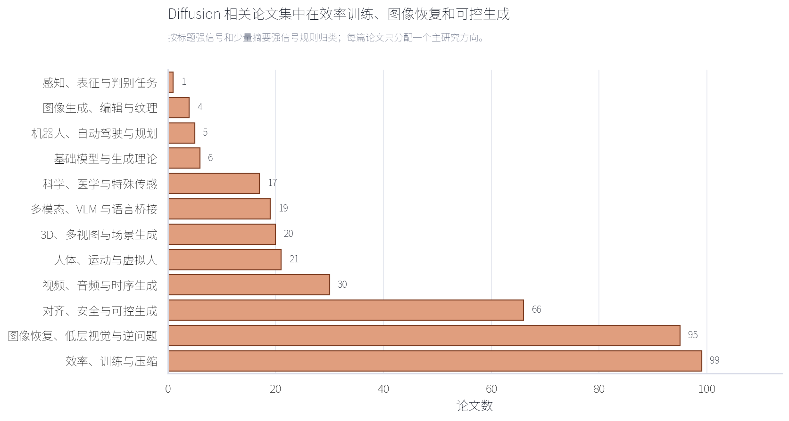
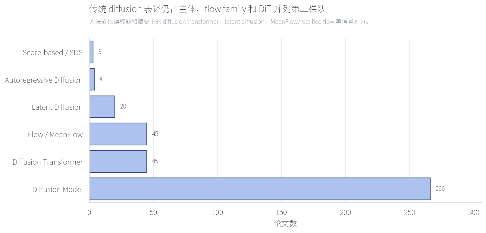
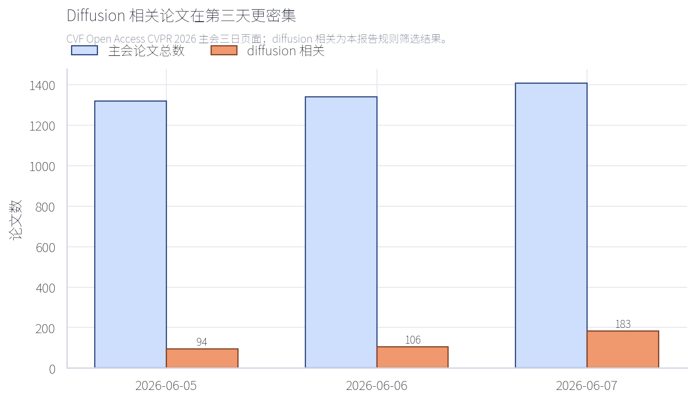

CVPR 2026 Diffusion 相关论文统计分析
技术摘要
在 CVF Open Access 收录的 CVPR 2026 主会 4,068 篇论文中，本报告按标题/摘要规则筛出 383 篇 diffusion 或 diffusion-adjacent 论文，占 9.4%。其中 337 篇标题直接含 diffusion/denoising，43 篇为 flow matching、rectified flow 或 MeanFlow 相关，3 篇主要由 score/SDS 信号进入。
效率训练、图像恢复和可控生成是最密集的三个方向
从研究方向看，diffusion 不再只集中在“生成一张图”本身，而是大规模渗透到训练/采样效率、低层视觉恢复、对齐与可控生成。第三天论文页面的 diffusion 相关密度最高，但这更像页面排布与主题安排的结果，不应解释为投稿趋势。



范围、数据与统计口径
数据源为 CVF Open Access 的 CVPR 2026 主会三天页面：2026-06-05、2026-06-06、2026-06-07。CVF 菜单页说明这些 open access 版本由 Computer Vision Foundation 提供，除水印外与接收版本一致；CVPR 2026 Main Conference 页面发布于 2026-05-23。
本报告定义的 diffusion 相关论文包括三类：标题含 diffusion/denoising；标题含 flow matching/rectified flow/MeanFlow/flow-based 且语义属于生成模型族；摘要或标题有 score-based/score distillation/SDS 强信号。只含普通 optical flow、泛化 “generative” 且无 diffusion/flow-family 信号的论文不计入。
相关性层级
| 类别 | 论文数 | 占比 |
|---|---|---|
| 标题强相关: diffusion/denoising | 337 | 88.0% |
| 标题强相关: flow family | 43 | 11.2% |
| 摘要强相关: score/SDS | 3 | 0.8% |
模态分布
| 类别 | 论文数 | 占比 |
|---|---|---|
| 图像 | 210 | 54.8% |
| 视频 | 47 | 12.3% |
| 3D/多视图 | 43 | 11.2% |
| 科学/医学/特殊传感 | 26 | 6.8% |
| 人体/运动 | 25 | 6.5% |
| 多模态/VLM | 25 | 6.5% |
| 机器人/具身 | 7 | 1.8% |
方法：可复现的规则筛选，而非主观手工列举
流程为：先从三份 CVF HTML 中解析论文标题、作者、CVF 页面、PDF 链接和 BibTeX；再用关键词形成候选集；最后用规则区分核心 diffusion、flow-family 和 score/SDS。研究方向、模态和方法族采用标题优先的规则归类，摘要只用于补充方法族或少量边界项。
注意：这是“文献地图/统计”口径，不是审稿级逐篇精读。全量 CSV 保留了链接，便于后续把某一方向拉出来做深读、复现或研究机会挖掘。
限制与稳健性检查
主要限制有三点：第一，CVF 页面是 open access 主会列表，本报告没有合并 Findings 或 Workshops；第二，规则筛选会漏掉少量“方法上用了 diffusion 但标题/摘要不显式写出”的论文；第三，单标签研究方向会压缩交叉主题，例如 diffusion transformer 的加速论文同时属于效率和基础模型，这里优先归为效率。
稳健性检查显示：380 / 383 篇由标题强信号进入，说明结果主要由可审计标题规则驱动，而不是摘要中的弱提及。
建议优先阅读路线
如果目标是跟进研究方向，优先看效率/训练、图像恢复和对齐控制三组。效率组能直接影响 DiT、采样器和部署；图像恢复组说明 diffusion prior 正在成为低层视觉的通用工具；对齐与安全组则和文本到图像模型的实际产品化约束最接近。
效率、训练与压缩：99 篇
- Training-free, Perceptually Consistent Low-Resolution Previews with High-Resolution Image for Efficient Workflows of Diffusion Models
- Accelerating Diffusion via Hybrid Data-Pipeline Parallelism Based on Conditional Guidance Scheduling
- StreamAvatar: Streaming Diffusion Models for Real-Time Interactive Human Avatars
- MeshFlow: Efficient Artistic Mesh Generation via MeshVAE and Flow-based Diffusion Transformer
图像恢复、低层视觉与逆问题：95 篇
- When Local Rules Create Global Order: Self-Organized Representation Learning for Latent Diffusion Models
- Residual Diffusion Bridge Model for Image Restoration
- Reflection Separation from a Single Image via Joint Latent Diffusion
- MR. Illuminate: Zero-Shot Low-Light Image Enhancement with Diffusion Prior
对齐、安全与可控生成：66 篇
- Erasing Thousands of Concepts: Towards Scalable and Practical Concept Erasure for Text-to-Image Diffusion Models
- Taming Preference Mode Collapse via Directional Decoupling Alignment in Diffusion Reinforcement Learning
- VLM-Guided Group Preference Alignment for Diffusion-based Human Mesh Recovery
- Guiding a Diffusion Transformer with the Internal Dynamics of Itself
视频、音频与时序生成：30 篇
- AnyLift: Scaling Motion Reconstruction from Internet Videos via 2D Diffusion
- I'm a Map! Interpretable Motion-Attentive Maps: Spatio-Temporally Localizing Concepts in Video Diffusion Transformers
- Towards Holistic Modeling for Video Frame Interpolation with Auto-regressive Diffusion Transformers
- MotionEnhancer: Leveraging Video Diffusion for Motion-Enhanced Vision-Language Models
人体、运动与虚拟人：21 篇
- Ultra Diffusion Poser: Diffusion-Based Human Motion Tracking from Sparse Inertial Sensors and Ranging-based Between-sensor Distances
- MotionHiFlow: Text-to-Motion via Hierarchical Flow Matching
- Towards Human-Imperceptible Backdoor Attacks on Text-to-Image Diffusion Models
- ShowUI-p: Flow-based Generative Models as GUI Dexterous Hands
后续问题
- 哪些 diffusion 论文真正提出新训练目标或采样理论，哪些只是把现有模型迁移到新任务？
- Flow / MeanFlow 与 DiT 加速路线是否正在替代传统多步扩散，还是仅在特定生成任务上有效？
- 图像恢复与医学/科学方向中的 diffusion prior 是否有统一评估协议，还是仍主要依赖任务内指标？
全量论文清单
下表为本报告筛出的 383 篇论文。CSV 版本可用于排序、筛选和二次标注：cvpr2026_diffusion_papers.csv。
| ID | 日期 | 标题 | 作者 | 研究方向 | 模态 | 方法族 | 相关性层级 | 链接 |
|---|---|---|---|---|---|---|---|---|
| 7 | 2026-06-05 | Training-free, Perceptually Consistent Low-Resolution Previews with High-Resolution Image for Efficient Workflows of Diffusion Models | Wongi Jeong, Hoigi Seo, Se Young Chun | 效率、训练与压缩 | 3D/多视图 | Diffusion Model | 标题强相关: diffusion/denoising | CVF PDF |
| 13 | 2026-06-05 | Erasing Thousands of Concepts: Towards Scalable and Practical Concept Erasure for Text-to-Image Diffusion Models | Hoigi Seo, Byung Hyun Lee, Jaehyun Cho et al. | 对齐、安全与可控生成 | 图像 | Diffusion Model | 标题强相关: diffusion/denoising | CVF PDF |
| 19 | 2026-06-05 | Ultra Diffusion Poser: Diffusion-Based Human Motion Tracking from Sparse Inertial Sensors and Ranging-based Between-sensor Distances | Dominik Hollidt, Tommaso Bendinelli, Christian Holz | 人体、运动与虚拟人 | 人体/运动 | Diffusion Model | 标题强相关: diffusion/denoising | CVF PDF |
| 35 | 2026-06-05 | Taming Preference Mode Collapse via Directional Decoupling Alignment in Diffusion Reinforcement Learning | Chubin Chen, Sujie Hu, Jiashu Zhu et al. | 对齐、安全与可控生成 | 图像 | Diffusion Model | 标题强相关: diffusion/denoising | CVF PDF |
| 51 | 2026-06-05 | VLM-Guided Group Preference Alignment for Diffusion-based Human Mesh Recovery | Wenhao Shen, Hao Wang, Wanqi Yin et al. | 对齐、安全与可控生成 | 3D/多视图 | Diffusion Model | 标题强相关: diffusion/denoising | CVF PDF |
| 55 | 2026-06-05 | AnyLift: Scaling Motion Reconstruction from Internet Videos via 2D Diffusion | Hongjie Li, Heng Yu, Jiaman Li et al. | 视频、音频与时序生成 | 人体/运动 | Diffusion Model | 标题强相关: diffusion/denoising | CVF PDF |
| 56 | 2026-06-05 | Accelerating Diffusion via Hybrid Data-Pipeline Parallelism Based on Conditional Guidance Scheduling | Euisoo Jung, Byunghyun Kim, Hyunjin Kim et al. | 效率、训练与压缩 | 图像 | Diffusion Model | 标题强相关: diffusion/denoising | CVF PDF |
| 59 | 2026-06-05 | StreamAvatar: Streaming Diffusion Models for Real-Time Interactive Human Avatars | Zhiyao Sun, Ziqiao Peng, Yifeng Ma et al. | 效率、训练与压缩 | 人体/运动 | Diffusion Model | 标题强相关: diffusion/denoising | CVF PDF |
| 106 | 2026-06-05 | LLaDA-V: Large Language Diffusion Models with Visual Instruction Tuning | Zebin You, Shen Nie, Xiaolu Zhang et al. | 多模态、VLM 与语言桥接 | 多模态/VLM | Diffusion Model | 标题强相关: diffusion/denoising | CVF PDF |
| 111 | 2026-06-05 | When Local Rules Create Global Order: Self-Organized Representation Learning for Latent Diffusion Models | Junrong Lian, Weijian Deng, Pengxu Wei et al. | 图像恢复、低层视觉与逆问题 | 图像 | Latent Diffusion | 标题强相关: diffusion/denoising | CVF PDF |
| 112 | 2026-06-05 | MeshFlow: Efficient Artistic Mesh Generation via MeshVAE and Flow-based Diffusion Transformer | Weiyu Li, Antoine Toisoul, Tom Monnier et al. | 效率、训练与压缩 | 3D/多视图 | Flow / MeanFlow | 标题强相关: diffusion/denoising | CVF PDF |
| 117 | 2026-06-05 | Refining Few-Step Text-to-Multiview Diffusion via Reinforcement Learning | Ziyi Zhang, Li Shen, Deheng Ye et al. | 效率、训练与压缩 | 3D/多视图 | Diffusion Model | 标题强相关: diffusion/denoising | CVF PDF |
| 133 | 2026-06-05 | Trainable Log-linear Sparse Attention for Efficient Diffusion Transformers | Yifan Zhou, Zeqi Xiao, Tianyi Wei et al. | 效率、训练与压缩 | 图像 | Diffusion Transformer | 标题强相关: diffusion/denoising | CVF PDF |
| 139 | 2026-06-05 | FlowFM: Advancing Dark Optical Flow Estimation with Flow Matching | Fengyuan Zuo, Haiyan Jin, Yuanlin Zhang et al. | 基础模型与生成理论 | 图像 | Flow / MeanFlow | 标题强相关: flow family | CVF PDF |
| 140 | 2026-06-05 | Residual Diffusion Bridge Model for Image Restoration | Hebaixu Wang, Jing Zhang, Haoyang Chen et al. | 图像恢复、低层视觉与逆问题 | 图像 | Diffusion Model | 标题强相关: diffusion/denoising | CVF PDF |
| 160 | 2026-06-05 | I'm a Map! Interpretable Motion-Attentive Maps: Spatio-Temporally Localizing Concepts in Video Diffusion Transformers | Youngjun Jun, Seil Kang, Woojung Han et al. | 视频、音频与时序生成 | 人体/运动 | Diffusion Transformer | 标题强相关: diffusion/denoising | CVF PDF |
| 171 | 2026-06-05 | GeoRK2: Geometry-Guided Runge-Kutta Integration for Diffusion Transformer Acceleration | Chaoqun Sun, Zongjing Fu, Powei Chang et al. | 效率、训练与压缩 | 图像 | Diffusion Transformer | 标题强相关: diffusion/denoising | CVF PDF |
| 207 | 2026-06-05 | Reflection Separation from a Single Image via Joint Latent Diffusion | Zheng-Hui Huang, Zhixiang Wang, Yu-Lun Liu et al. | 图像恢复、低层视觉与逆问题 | 图像 | Latent Diffusion | 标题强相关: diffusion/denoising | CVF PDF |
| 228 | 2026-06-05 | Guiding a Diffusion Transformer with the Internal Dynamics of Itself | Xingyu Zhou, Qifan Li, Xiaobin Hu et al. | 对齐、安全与可控生成 | 图像 | Diffusion Transformer | 标题强相关: diffusion/denoising | CVF PDF |
| 244 | 2026-06-05 | MR. Illuminate: Zero-Shot Low-Light Image Enhancement with Diffusion Prior | Joshua Cho, Sara Aghajanzadeh, Zhen Zhu et al. | 图像恢复、低层视觉与逆问题 | 图像 | Diffusion Model | 标题强相关: diffusion/denoising | CVF PDF |
| 264 | 2026-06-05 | Towards Photorealistic and Efficient Bokeh Rendering via Diffusion Framework | Linxiao Shi, Siming Zheng, Zerong Wang et al. | 效率、训练与压缩 | 视频 | Diffusion Model | 标题强相关: diffusion/denoising | CVF PDF |
| 273 | 2026-06-05 | Towards Holistic Modeling for Video Frame Interpolation with Auto-regressive Diffusion Transformers | Xinyu Peng, Han Li, Yuyang Huang et al. | 视频、音频与时序生成 | 视频 | Diffusion Transformer | 标题强相关: diffusion/denoising | CVF PDF |
| 285 | 2026-06-05 | Can We Build Scene Graphs, Not Classify Them? FlowSG: Progressive Image-Conditioned Scene Graph Generation with Flow Matching | Xin Hu, Ke Qin, Wen Yin et al. | 3D、多视图与场景生成 | 3D/多视图 | Flow / MeanFlow | 标题强相关: flow family | CVF PDF |
| 287 | 2026-06-05 | A Self-Conditioned Representation Guided Diffusion Model for Realistic Text-to-LiDAR Scene Generation | Wentao Qu, Guofeng Mei, Yang Wu et al. | 对齐、安全与可控生成 | 3D/多视图 | Diffusion Model | 标题强相关: diffusion/denoising | CVF PDF |
| 289 | 2026-06-05 | MotionEnhancer: Leveraging Video Diffusion for Motion-Enhanced Vision-Language Models | Yifan Xu, Chao Zhang, Ruifei Ma et al. | 视频、音频与时序生成 | 人体/运动 | Diffusion Model | 标题强相关: diffusion/denoising | CVF PDF |
| 299 | 2026-06-05 | GuideFlow: Constraint-Guided Flow Matching for Planning in End-to-End Autonomous Driving | Lin Liu, Caiyan Jia, Guanyi Yu et al. | 对齐、安全与可控生成 | 机器人/具身 | Flow / MeanFlow | 标题强相关: flow family | CVF PDF |
| 302 | 2026-06-05 | Layer-wise Instance Binding for Regional and Occlusion Control in Text-to-Image Diffusion Transformers | Ruidong Chen, Yancheng Bai, Xuanpu Zhang et al. | 对齐、安全与可控生成 | 图像 | Diffusion Transformer | 标题强相关: diffusion/denoising | CVF PDF |
| 304 | 2026-06-05 | Pantheon360: Taming Digital Twin Generation via 3D-Aware 360deg Video Diffusion | Ting-Hsuan Chen, Ying-Huan Chen, Tao Tu et al. | 视频、音频与时序生成 | 3D/多视图 | Diffusion Model | 标题强相关: diffusion/denoising | CVF PDF |
| 305 | 2026-06-05 | Correspondence-Attention Alignment for Multi-View Diffusion Models | Minkyung Kwon, Jinhyeok Choi, Jiho Park et al. | 对齐、安全与可控生成 | 3D/多视图 | Diffusion Model | 标题强相关: diffusion/denoising | CVF PDF |
| 339 | 2026-06-05 | MotionHiFlow: Text-to-Motion via Hierarchical Flow Matching | Heng Li, Xiaotong Lin, Ling-An Zeng et al. | 人体、运动与虚拟人 | 人体/运动 | Flow / MeanFlow | 标题强相关: flow family | CVF PDF |
| 341 | 2026-06-05 | Semantic-Adaptive Diffusion for Dynamic Spatiotemporal Fusion | Jinsong Zhang, Ying Qu, Yuan Liao et al. | 视频、音频与时序生成 | 视频 | Diffusion Model | 标题强相关: diffusion/denoising | CVF PDF |
| 344 | 2026-06-05 | Face2Scene: Using Facial Degradation as an Oracle for Diffusion-Based Scene Restoration | Amirhossein Kazerouni, Maitreya Suin, Tristan Aumentado-Armstrong et al. | 3D、多视图与场景生成 | 3D/多视图 | Diffusion Model | 标题强相关: diffusion/denoising | CVF PDF |
| 370 | 2026-06-05 | BinaryAttention: One-Bit QK-Attention for Vision and Diffusion Transformers | Chaodong Xiao, Zhengqiang Zhang, Lei Zhang | 图像恢复、低层视觉与逆问题 | 图像 | Diffusion Transformer | 标题强相关: diffusion/denoising | CVF PDF |
| 374 | 2026-06-05 | One Model, Many Budgets: Elastic Latent Interfaces for Diffusion Transformers | Moayed Haji-Ali, Willi Menapace, Ivan Skorokhodov et al. | 效率、训练与压缩 | 图像 | Diffusion Transformer | 标题强相关: diffusion/denoising | CVF PDF |
| 383 | 2026-06-05 | ConceptPrism: Concept Disentanglement in Personalized Diffusion Models via Residual Token Optimization | Minseo Kim, Minchan Kwon, Dongyeun Lee et al. | 对齐、安全与可控生成 | 图像 | Diffusion Model | 标题强相关: diffusion/denoising | CVF PDF |
| 433 | 2026-06-05 | FloodDiffusion: Tailored Diffusion Forcing for Streaming Motion Generation | Yiyi Cai, Yuhan Wu, Kunhang Li et al. | 效率、训练与压缩 | 人体/运动 | Diffusion Model | 标题强相关: diffusion/denoising | CVF PDF |
| 450 | 2026-06-05 | Splatent: Splatting Diffusion Latents for Novel View Synthesis | Or Hirschorn, Omer Sela, Inbar Huberman-Spiegelglas et al. | 3D、多视图与场景生成 | 3D/多视图 | Latent Diffusion | 标题强相关: diffusion/denoising | CVF PDF |
| 516 | 2026-06-05 | Diffusion-Based Native Adversarial Synthesis for Enhanced Medical Segmentation Generalization | Hongyu Zhang, Haipeng Chen, Zhimin Xu et al. | 科学、医学与特殊传感 | 科学/医学/特殊传感 | Diffusion Model | 标题强相关: diffusion/denoising | CVF PDF |
| 533 | 2026-06-05 | SafeRoPE: Risk-specific Head-wise Embedding Rotation for Safe Generation in Rectified Flow Transformers | Xiang Yang, Feifei Li, Mi Zhang et al. | 图像生成、编辑与纹理 | 图像 | Flow / MeanFlow | 标题强相关: flow family | CVF PDF |
| 535 | 2026-06-05 | GenErase: Generalizable and Semantically-Aware Concept Erasure in Diffusion Models | Korada Sri Vardhana, Soma Biswas | 对齐、安全与可控生成 | 图像 | Diffusion Model | 标题强相关: diffusion/denoising | CVF PDF |
| 536 | 2026-06-05 | RawMetaDiff: Unlocking Extreme Darkness from Dual-Exposure RAW with Meta-Guided Diffusion | Panjun Liu, Jiyuan Xia, Yuanshen Guan et al. | 对齐、安全与可控生成 | 图像 | Diffusion Model | 标题强相关: diffusion/denoising | CVF PDF |
| 562 | 2026-06-05 | MatMart: Material Reconstruction of 3D Objects via Diffusion | Xiuchao Wu, Pengfei Zhu, Jiangjing Lyu et al. | 3D、多视图与场景生成 | 3D/多视图 | Diffusion Model | 标题强相关: diffusion/denoising | CVF PDF |
| 590 | 2026-06-05 | SmokeSVD: Smoke Reconstruction from A Single View via Progressive Novel View Synthesis and Refinement with Diffusion Models | Chen Li, Shanshan Dong, Sheng Qiu et al. | 3D、多视图与场景生成 | 3D/多视图 | Diffusion Model | 标题强相关: diffusion/denoising | CVF PDF |
| 609 | 2026-06-05 | DisCa: Accelerating Video Diffusion Transformers with Distillation-Compatible Learnable Feature Caching | Chang Zou, Changlin Li, Songtao Liu et al. | 效率、训练与压缩 | 视频 | Diffusion Transformer | 标题强相关: diffusion/denoising | CVF PDF |
| 613 | 2026-06-05 | DyaDiT: A Multi-Modal Diffusion Transformer for Socially Favorable Dyadic Gesture Generation | Yichen Peng, Jyun-Ting Song, Siyeol Jung et al. | 多模态、VLM 与语言桥接 | 人体/运动 | Diffusion Transformer | 标题强相关: diffusion/denoising | CVF PDF |
| 623 | 2026-06-05 | 3M-TI: High-Quality Mobile Thermal Imaging via Calibration-free Multi-Camera Cross-Modal Diffusion | Minchong Chen, Xiaoyun Yuan, Junzhe Wan et al. | 图像恢复、低层视觉与逆问题 | 图像 | Diffusion Model | 标题强相关: diffusion/denoising | CVF PDF |
| 640 | 2026-06-05 | Dynamic-eDiTor: Training-Free Text-Driven 4D Scene Editing with Multimodal Diffusion Transformer | Dong In Lee, Hyungjun Doh, Seunggeun Chi et al. | 效率、训练与压缩 | 3D/多视图 | Diffusion Transformer | 标题强相关: diffusion/denoising | CVF PDF |
| 641 | 2026-06-05 | Guiding Diffusion-based Reconstruction with Contrastive Signals for Balanced Visual Representation | Boyu Han, Qianqian Xu, Shilong Bao et al. | 对齐、安全与可控生成 | 图像 | Diffusion Model | 标题强相关: diffusion/denoising | CVF PDF |
| 669 | 2026-06-05 | Towards Human-Imperceptible Backdoor Attacks on Text-to-Image Diffusion Models | Yiming Wu, Chenghao Chen, Changkun Wu et al. | 人体、运动与虚拟人 | 人体/运动 | Diffusion Model | 标题强相关: diffusion/denoising | CVF PDF |
| 678 | 2026-06-05 | ProjFlow: Projection Sampling with Flow Matching for Zero-Shot Exact Spatial Motion Control | Akihisa Watanabe, Qing Yu, Edgar Simo-Serra et al. | 对齐、安全与可控生成 | 科学/医学/特殊传感 | Flow / MeanFlow | 标题强相关: flow family | CVF PDF |
| 708 | 2026-06-05 | MaxMark: High-Capacity Diffusion-Native Watermarking via Robust and Invertible Latent Embedding | Xuanhang Chang, Zhonghao Yang, Cheng Zhuo et al. | 图像恢复、低层视觉与逆问题 | 图像 | Latent Diffusion | 标题强相关: diffusion/denoising | CVF PDF |
| 730 | 2026-06-05 | CFG-Ctrl: Control-Based Classifier-Free Diffusion Guidance | Hanyang Wang, Yiyang Liu, Jiawei Chi et al. | 对齐、安全与可控生成 | 图像 | Diffusion Model | 标题强相关: diffusion/denoising | CVF PDF |
| 750 | 2026-06-05 | FlashLips: 100-FPS Mask-Free Latent Lip-Sync using Reconstruction Instead of Diffusion or GANs | Andreas Zinonos, Michał Stypułkowski, Antoni Bigata et al. | 图像恢复、低层视觉与逆问题 | 图像 | Latent Diffusion | 标题强相关: diffusion/denoising | CVF PDF |
| 771 | 2026-06-05 | DDiT: Dynamic Patch Scheduling for Efficient Diffusion Transformers | Dahye Kim, Deepti Ghadiyaram, Raghudeep Gadde | 效率、训练与压缩 | 图像 | Diffusion Transformer | 标题强相关: diffusion/denoising | CVF PDF |
| 792 | 2026-06-05 | DiffusionFF: A Diffusion-based Framework for Joint Face Forgery Detection and Fine-Grained Artifact Localization | Siran Peng, Haoyuan Zhang, Li Gao et al. | 科学、医学与特殊传感 | 科学/医学/特殊传感 | Diffusion Model | 标题强相关: diffusion/denoising | CVF PDF |
| 807 | 2026-06-05 | Diffusion Guided Chain-of-Vision for Large Autoregressive Vision Models | Xinyang Wang, Kecheng Zheng, Minfeng Zhu et al. | 对齐、安全与可控生成 | 图像 | Diffusion Model | 标题强相关: diffusion/denoising | CVF PDF |
| 816 | 2026-06-05 | Stable Mean Flow: Lyapunov-Inspired One-Step Flow Matching | Guangxun Zhang, Mason Haberle, Davi Geiger | 效率、训练与压缩 | 图像 | Flow / MeanFlow | 标题强相关: flow family | CVF PDF |
| 830 | 2026-06-05 | Heterogeneous Decentralized Diffusion Models | Zhiying Jiang, Raihan Seraj, Marcos Villagra et al. | 图像恢复、低层视觉与逆问题 | 图像 | Diffusion Model | 标题强相关: diffusion/denoising | CVF PDF |
| 831 | 2026-06-05 | Goal-Driven Reward by Video Diffusion Models for Reinforcement Learning | Qi Wang, Mian Wu, Yuyang Zhang et al. | 对齐、安全与可控生成 | 视频 | Diffusion Model | 标题强相关: diffusion/denoising | CVF PDF |
| 833 | 2026-06-05 | GeniNav: Generative Model Driven Image-Goal Navigation via Imagination-Guided Consistency Flow Matching | Yuqi Chen, Junjie Gao, Yongzhou Pan et al. | 对齐、安全与可控生成 | 图像 | Flow / MeanFlow | 标题强相关: flow family | CVF PDF |
| 853 | 2026-06-05 | DMGD: Train-Free Dataset Distillation with Semantic-Distribution Matching in Diffusion Models | Qichao Wang, Yunhong Lu, Hengyuan Cao et al. | 效率、训练与压缩 | 图像 | Diffusion Model | 标题强相关: diffusion/denoising | CVF PDF |
| 856 | 2026-06-05 | ShowUI-p: Flow-based Generative Models as GUI Dexterous Hands | Siyuan Hu, Kevin Qinghong Lin, Mike Zheng Shou | 人体、运动与虚拟人 | 图像 | Flow / MeanFlow | 标题强相关: flow family | CVF PDF |
| 859 | 2026-06-05 | DRM: Diffusion-based Reward Model With Step-wise Guidance | Jaxon Zhang, Binxin Yang, Hubery Yin et al. | 对齐、安全与可控生成 | 图像 | Diffusion Model | 标题强相关: diffusion/denoising | CVF PDF |
| 864 | 2026-06-05 | Diff4Splat: Repurposing Video Diffusion Models for Dynamic Scene Generation | Panwang Pan, Chenguo Lin, Chenxin Li et al. | 视频、音频与时序生成 | 3D/多视图 | Diffusion Model | 标题强相关: diffusion/denoising | CVF PDF |
| 886 | 2026-06-05 | Single-step Diffusion-based Video Coding with Semantic-Temporal Guidance | Naifu Xue, Zhaoyang Jia, Jiahao Li et al. | 视频、音频与时序生成 | 视频 | Diffusion Model | 标题强相关: diffusion/denoising | CVF PDF |
| 888 | 2026-06-05 | ManifoldGD: Training-Free Hierarchical Manifold Guidance for Diffusion-Based Dataset Distillation | Ayush Roy, Wei-Yang Alex Lee, Rudrasis Chakraborty et al. | 效率、训练与压缩 | 图像 | Diffusion Model | 标题强相关: diffusion/denoising | CVF PDF |
| 892 | 2026-06-05 | Thinking Diffusion: Penalize and Guide Visual-Grounded Reasoning in Diffusion Multimodal Language Models | Keuntae Kim, Mingyu Kang, Yong Suk Choi | 多模态、VLM 与语言桥接 | 多模态/VLM | Diffusion Model | 标题强相关: diffusion/denoising | CVF PDF |
| 896 | 2026-06-05 | ZeroIDIR: Zero-Reference Illumination Degradation Image Restoration with Perturbed Consistency Diffusion Models | Hai Jiang, Zhen Liu, Yinjie Lei et al. | 图像恢复、低层视觉与逆问题 | 图像 | Diffusion Model | 标题强相关: diffusion/denoising | CVF PDF |
| 901 | 2026-06-05 | FUSER: Feed-Forward Multiview 3D Registration Transformer and SE(3)$^N$ Diffusion Refinement | Haobo Jiang, Jin Xie, Jian Yang et al. | 3D、多视图与场景生成 | 3D/多视图 | Diffusion Transformer | 标题强相关: diffusion/denoising | CVF PDF |
| 965 | 2026-06-05 | MMFace-DiT: A Dual-Stream Diffusion Transformer for High-Fidelity Multimodal Face Generation | Bharath Krishnamurthy, Ajita Rattani | 多模态、VLM 与语言桥接 | 多模态/VLM | Diffusion Transformer | 标题强相关: diffusion/denoising | CVF PDF |
| 971 | 2026-06-05 | COT-FM: Cluster-wise Optimal Transport Flow Matching | Chiensheng Chiang, Kuan-Hsun Tu, Jia-Wei Liao et al. | 基础模型与生成理论 | 图像 | Flow / MeanFlow | 标题强相关: flow family | CVF PDF |
| 974 | 2026-06-05 | Test-time Sparsity for Extreme Fast Action Diffusion | Kangye Ji, Yuan Meng, Jianbo Zhou et al. | 效率、训练与压缩 | 图像 | Diffusion Model | 标题强相关: diffusion/denoising | CVF PDF |
| 983 | 2026-06-05 | Fighting Hallucinations with Counterfactuals: Diffusion-Guided Perturbations for LVLM Hallucination Suppression | Hamidreza Dastmalchi, Aijun An, Ali Cheraghian et al. | 对齐、安全与可控生成 | 多模态/VLM | Diffusion Model | 标题强相关: diffusion/denoising | CVF PDF |
| 985 | 2026-06-05 | Similarity-Consistent Likelihood Diffusion enables Hidden Person Detection from Wall Reflections | Zhiwen Zheng, Hao Zhou, Huiyu Qi et al. | 图像恢复、低层视觉与逆问题 | 图像 | Diffusion Model | 标题强相关: diffusion/denoising | CVF PDF |
| 1007 | 2026-06-05 | Frequency-Aware Flow Matching for High-Quality Image Generation | Sucheng Ren, Qihang Yu, Ju He et al. | 图像生成、编辑与纹理 | 图像 | Flow / MeanFlow | 标题强相关: flow family | CVF PDF |
| 1010 | 2026-06-05 | LIFT and PLACE: A Simple, Stable, and Effective Knowledge Distillation Framework for Lightweight Diffusion Models | Hyunsoo Han, Sangyeop Yeo, Jaejun Yoo | 效率、训练与压缩 | 视频 | Diffusion Model | 标题强相关: diffusion/denoising | CVF PDF |
| 1035 | 2026-06-05 | Region-Adaptive Sampling for Diffusion Transformers | Ziming Liu, Yifan Yang, Chengruidong Zhang et al. | 图像恢复、低层视觉与逆问题 | 图像 | Diffusion Transformer | 标题强相关: diffusion/denoising | CVF PDF |
| 1075 | 2026-06-05 | DABO: Difficulty-Aware Bayesian Optimization with Diffusion-Learned Priors | Mengyang Li, Pinlong Zhao | 图像恢复、低层视觉与逆问题 | 图像 | Diffusion Model | 标题强相关: diffusion/denoising | CVF PDF |
| 1076 | 2026-06-05 | Advancing Image Classification with Discrete Diffusion Classification Modeling | Omer Belhasin, Shelly Golan, Ran El-Yaniv et al. | 图像恢复、低层视觉与逆问题 | 图像 | Diffusion Model | 标题强相关: diffusion/denoising | CVF PDF |
| 1077 | 2026-06-05 | CoopDiff: A Diffusion-Guided Approach for Cooperation under Corruptions | Gong Chen, Chaokun Zhang, Pengcheng Lv | 对齐、安全与可控生成 | 图像 | Diffusion Model | 标题强相关: diffusion/denoising | CVF PDF |
| 1121 | 2026-06-05 | VMonarch: Efficient Video Diffusion Transformers with Structured Attention | Cheng Liang, Haoxian Chen, Liang Hou et al. | 效率、训练与压缩 | 视频 | Diffusion Transformer | 标题强相关: diffusion/denoising | CVF PDF |
| 1133 | 2026-06-05 | SignPR: A Progressive Vector-Quantized Diffusion Framework for Sign Language Production | Xiao Liu, Shiwei Gan, Yafeng Yin et al. | 视频、音频与时序生成 | 视频 | Diffusion Model | 标题强相关: diffusion/denoising | CVF PDF |
| 1134 | 2026-06-05 | PureProof: Diffusion-Resistant Black-box Targeted Attack on Large Vision-Language Models | Yiming Cao, Dong Wang, Xinqi Lyu et al. | 多模态、VLM 与语言桥接 | 多模态/VLM | Diffusion Model | 标题强相关: diffusion/denoising | CVF PDF |
| 1142 | 2026-06-05 | MakeAnything: Harnessing Diffusion Transformers for Multi-Domain Procedural Sequence Generation | Yiren Song, Cheng Liu, Mike Zheng Shou | 图像恢复、低层视觉与逆问题 | 图像 | Diffusion Transformer | 标题强相关: diffusion/denoising | CVF PDF |
| 1143 | 2026-06-05 | Memory-Efficient Fine-Tuning Diffusion Transformers via Dynamic Patch Sampling and Block Skipping | Sunghyun Park, Jeongho Kim, Hyoungwoo Park et al. | 效率、训练与压缩 | 图像 | Diffusion Transformer | 标题强相关: diffusion/denoising | CVF PDF |
| 1205 | 2026-06-05 | DiffDecompose: Layer-Wise Decomposition of Alpha-Composited Images via Diffusion Transformers | Zitong Wang, Hang Zhao, Qianyu Zhou et al. | 人体、运动与虚拟人 | 人体/运动 | Diffusion Transformer | 标题强相关: diffusion/denoising | CVF PDF |
| 1221 | 2026-06-05 | Imagine Before Concentration: Diffusion-Guided Registers Enhance Partially Relevant Video Retrieval | Jun Li, Xuhang Lou, Jinpeng Wang et al. | 对齐、安全与可控生成 | 视频 | Diffusion Model | 标题强相关: diffusion/denoising | CVF PDF |
| 1223 | 2026-06-05 | EgoFlow: Gradient-Guided Flow Matching for Egocentric 6DoF Object Motion Generation | Abhishek Saroha, Huajian Zeng, Xingxing Zuo et al. | 对齐、安全与可控生成 | 科学/医学/特殊传感 | Flow / MeanFlow | 标题强相关: flow family | CVF PDF |
| 1229 | 2026-06-05 | Thermal Diffusion Matters: Infrared Spatial-Temporal Video Super-Resolution through Heat Conduction Priors | Mingxuan Zhou, Shuang Li, Yutang Zhang et al. | 科学、医学与特殊传感 | 科学/医学/特殊传感 | Diffusion Model | 标题强相关: diffusion/denoising | CVF PDF |
| 1230 | 2026-06-05 | Diffusion-Based Makeup Transfer with Facial Region-Aware Makeup Features | Zheng Gao, Debin Meng, Yunqi Miao et al. | 图像恢复、低层视觉与逆问题 | 图像 | Diffusion Model | 标题强相关: diffusion/denoising | CVF PDF |
| 1274 | 2026-06-05 | GRPO-Guard: Mitigating Implicit Over-Optimization in Flow Matching via Regulated Clipping | Jing Wang, Jiajun Liang, Jie Liu et al. | 基础模型与生成理论 | 图像 | Flow / MeanFlow | 标题强相关: flow family | CVF PDF |
| 1275 | 2026-06-05 | Efficient Weighted Sampling via Score-based Generative Models | Heasung Kim, Taekyun Lee, Hyeji Kim et al. | 效率、训练与压缩 | 图像 | Score-based / SDS | 摘要强相关: score/SDS | CVF PDF |
| 1283 | 2026-06-05 | Reasoning Diffusion for Unpaired Test Time Out-of-distribution Text-Image to Video Generation | Zirui Pan, Xin Wang, Yipeng Zhang et al. | 视频、音频与时序生成 | 视频 | Diffusion Model | 标题强相关: diffusion/denoising | CVF PDF |
| 1316 | 2026-06-05 | ImageRAGTurbo: Towards One-step Text-to-Image Generation with Retrieval-Augmented Diffusion Models | Peijie Qiu, Hariharan Ramshankar, Arnau Ramisa et al. | 效率、训练与压缩 | 图像 | Diffusion Model | 标题强相关: diffusion/denoising | CVF PDF |
| 1334 | 2026-06-06 | Pluggable Pruning with Contiguous Layer Distillation for Diffusion Transformers | Jian Ma, Qirong Peng, Xujie Zhu et al. | 效率、训练与压缩 | 图像 | Diffusion Transformer | 标题强相关: diffusion/denoising | CVF PDF |
| 1342 | 2026-06-06 | Dual Ascent Diffusion for Inverse Problems | Minseo Kim, Axel Levy, Gordon Wetzstein | 图像恢复、低层视觉与逆问题 | 图像 | Diffusion Model | 标题强相关: diffusion/denoising | CVF PDF |
| 1347 | 2026-06-06 | AffordGrasp: Cross-Modal Diffusion for Affordance-Aware Grasp Synthesis | Xiaofei Wu, Yi Zhang, Yumeng Liu et al. | 机器人、自动驾驶与规划 | 机器人/具身 | Diffusion Model | 标题强相关: diffusion/denoising | CVF PDF |
| 1357 | 2026-06-06 | MoCoDiff: A Controllable Autoregressive Diffusion Model for Expressive Motion Generation | Wenfeng Song, Xuehan Wang, Shuai Li et al. | 对齐、安全与可控生成 | 人体/运动 | Autoregressive Diffusion | 标题强相关: diffusion/denoising | CVF PDF |
| 1362 | 2026-06-06 | Streaming Diffusion Model for Fast Infrared and Visible Video Fusion | Jinyuan Liu, Ludan Sun, Tengyu Ma et al. | 效率、训练与压缩 | 科学/医学/特殊传感 | Diffusion Model | 标题强相关: diffusion/denoising | CVF PDF |
| 1371 | 2026-06-06 | FlowDC: Flow-Based Decoupling-Decay for Complex Image Editing | Yilei Jiang, Zhen Wang, Yanghao Wang et al. | 图像生成、编辑与纹理 | 图像 | Flow / MeanFlow | 标题强相关: flow family | CVF PDF |
| 1373 | 2026-06-06 | MeanFlow Transformers with Representation Autoencoders | Zheyuan Hu, Chieh-Hsin Lai, Ge Wu et al. | 感知、表征与判别任务 | 图像 | Flow / MeanFlow | 标题强相关: flow family | CVF PDF |
| 1374 | 2026-06-06 | WeMMU: Enhanced Bridging of Vision-Language Models and Diffusion Models via Noisy Query Tokens | Jian Yang, Dacheng Yin, Xiaoxuan He et al. | 多模态、VLM 与语言桥接 | 多模态/VLM | Diffusion Model | 标题强相关: diffusion/denoising | CVF PDF |
| 1379 | 2026-06-06 | NaTex: Seamless Texture Generation as Latent Color Diffusion | Zeqiang Lai, Yunfei Zhao, Zibo Zhao et al. | 图像恢复、低层视觉与逆问题 | 图像 | Latent Diffusion | 标题强相关: diffusion/denoising | CVF PDF |
| 1387 | 2026-06-06 | PhyOceanCast: Global Ocean Forecasting with Physics-Informed Diffusion | Qixiu Li, Xiang Zhu, Xiaoyong Li et al. | 科学、医学与特殊传感 | 科学/医学/特殊传感 | Diffusion Model | 标题强相关: diffusion/denoising | CVF PDF |
| 1400 | 2026-06-06 | SenCache: Accelerating Diffusion Model Inference via Sensitivity-Aware Caching | Yasaman Haghighi, Alexandre Alahi | 效率、训练与压缩 | 图像 | Diffusion Model | 标题强相关: diffusion/denoising | CVF PDF |
| 1404 | 2026-06-06 | HDW-SR: High-Frequency Guided Diffusion Model based on Wavelet Decomposition for Image Super-Resolution | Chao Yang, Boqian Zhang, Jinghao Xu et al. | 对齐、安全与可控生成 | 图像 | Diffusion Model | 标题强相关: diffusion/denoising | CVF PDF |
| 1408 | 2026-06-06 | Self-Diffusion Driven Blind Imaging | Yanlong Yang, Guanxiong Luo | 图像恢复、低层视觉与逆问题 | 图像 | Diffusion Model | 标题强相关: diffusion/denoising | CVF PDF |
| 1409 | 2026-06-06 | Delta Rectified Flow Sampling for Text-to-Image Editing | Gaspard Beaudouin, Minghan Li, Jaeyeon Kim et al. | 图像生成、编辑与纹理 | 图像 | Flow / MeanFlow | 标题强相关: flow family | CVF PDF |
| 1431 | 2026-06-06 | Training-free Mixed-Resolution Latent Upsampling for Spatially Accelerated Diffusion Transformers | Wongi Jeong, Kyungryeol Lee, Hoigi Seo et al. | 效率、训练与压缩 | 图像 | Diffusion Transformer | 标题强相关: diffusion/denoising | CVF PDF |
| 1443 | 2026-06-06 | InvAD: Inversion-based Reconstruction-Free Anomaly Detection with Diffusion Models | Shunsuke Sakai, Xiangteng He, Chunzhi Gu et al. | 图像恢复、低层视觉与逆问题 | 图像 | Diffusion Model | 标题强相关: diffusion/denoising | CVF PDF |
| 1449 | 2026-06-06 | Attribute-Preserving Pseudo-Labeling for Diffusion-Based Face Swapping | Jiwon Kang, Yeji Choi, JoungBin Lee et al. | 图像恢复、低层视觉与逆问题 | 图像 | Diffusion Model | 标题强相关: diffusion/denoising | CVF PDF |
| 1482 | 2026-06-06 | Uni-DAD: Unified Distillation and Adaptation of Diffusion Models for Few-step Few-shot Image Generation | Yara Bahram, Mélodie Desbos, Mohammadhadi Shateri et al. | 效率、训练与压缩 | 图像 | Diffusion Model | 标题强相关: diffusion/denoising | CVF PDF |
| 1499 | 2026-06-06 | Few-shot Acoustic Synthesis with Multimodal Flow Matching | Amandine Brunetto | 多模态、VLM 与语言桥接 | 多模态/VLM | Flow / MeanFlow | 标题强相关: flow family | CVF PDF |
| 1500 | 2026-06-06 | Anatomica: Localized Control over Geometric and Topological Properties for Anatomical Diffusion Models | Karim Kadry, Abdalla Abdelwahed, Ajay Manicka et al. | 对齐、安全与可控生成 | 图像 | Diffusion Model | 标题强相关: diffusion/denoising | CVF PDF |
| 1522 | 2026-06-06 | D$^2$-FOSA: Dual-Diffusion Guided EEG-to-Image Reconstruction with Frequency-Oriented Semantic Alignment | Chenglong Yu, Shuai Shen, Xiangsheng Li et al. | 对齐、安全与可控生成 | 图像 | Diffusion Model | 标题强相关: diffusion/denoising | CVF PDF |
| 1551 | 2026-06-06 | Iris: Bringing Real-World Priors into Diffusion Model for Monocular Depth Estimation | Xinhao Cai, Gensheng Pei, Zeren Sun et al. | 图像恢复、低层视觉与逆问题 | 图像 | Diffusion Model | 标题强相关: diffusion/denoising | CVF PDF |
| 1601 | 2026-06-06 | L3DR: 3D-aware LiDAR Diffusion and Rectification | Quan Liu, Xiaoqin Zhang, Ling Shao et al. | 科学、医学与特殊传感 | 3D/多视图 | Diffusion Model | 标题强相关: diffusion/denoising | CVF PDF |
| 1602 | 2026-06-06 | Semantic Derivative Flow: Graph-Guided Diffusion for Controllable Instance Interactions | Shibin Mei, Hang Wang, Bingbing Ni | 对齐、安全与可控生成 | 图像 | Diffusion Model | 标题强相关: diffusion/denoising | CVF PDF |
| 1605 | 2026-06-06 | Resolving Endpoint Underfitting in Diffusion Bridges via Noise Alignment | Yurong Gao, Zicheng Zhang, Congying Han et al. | 对齐、安全与可控生成 | 图像 | Diffusion Model | 标题强相关: diffusion/denoising | CVF PDF |
| 1626 | 2026-06-06 | DRiffusion: Draft-and-Refine Process Parallelizes Diffusion Models with Ease | Runsheng Bai, Chengyu Zhang, Yangdong Deng | 图像恢复、低层视觉与逆问题 | 图像 | Diffusion Model | 标题强相关: diffusion/denoising | CVF PDF |
| 1631 | 2026-06-06 | PlannerRFT: Reinforcing Diffusion Planners through Closed-Loop and Sample-Efficient Fine-Tuning | Hongchen Li, Tianyu Li, Jiazhi Yang et al. | 效率、训练与压缩 | 图像 | Diffusion Model | 标题强相关: diffusion/denoising | CVF PDF |
| 1633 | 2026-06-06 | Unifying Precise Keyframes and Semantic Control via Multi-level Diffusion | Linjun Wu, Jiejia Yu, Leyang Jin et al. | 对齐、安全与可控生成 | 视频 | Diffusion Model | 标题强相关: diffusion/denoising | CVF PDF |
| 1669 | 2026-06-06 | DiffuView: Multi-View Diffusion Pretraining for 3D Aware Robotic Manipulation | Kaizhao Zhang, Tian Niu, Tianyu Liu et al. | 效率、训练与压缩 | 3D/多视图 | Diffusion Model | 标题强相关: diffusion/denoising | CVF PDF |
| 1688 | 2026-06-06 | CG-Floor: Centroid-Guided Diffusion for Large-Scale Floorplan Generation | Hongjin Lian, Jian Ma, Hongjie Chen et al. | 对齐、安全与可控生成 | 图像 | Diffusion Model | 标题强相关: diffusion/denoising | CVF PDF |
| 1724 | 2026-06-06 | Guiding a Diffusion Model by Swapping Its Tokens | Weijia Zhang, Yuehao Liu, Shanyan Guan et al. | 对齐、安全与可控生成 | 图像 | Diffusion Model | 标题强相关: diffusion/denoising | CVF PDF |
| 1737 | 2026-06-06 | When Numbers Speak: Aligning Textual Numerals and Visual Instances in Text-to-Video Diffusion Models | Zhengyang Sun, Yu Chen, Xin Zhou et al. | 视频、音频与时序生成 | 视频 | Diffusion Model | 标题强相关: diffusion/denoising | CVF PDF |
| 1777 | 2026-06-06 | Sculpt4D: Generating 4D Shapes via Sparse-Attention Diffusion Transformers | Minghao Yin, Wenbo Hu, Jiale Xu et al. | 3D、多视图与场景生成 | 3D/多视图 | Diffusion Transformer | 标题强相关: diffusion/denoising | CVF PDF |
| 1783 | 2026-06-06 | CARD: Correlation Aware Restoration with Diffusion | Niki Nezakati, Arnab Ghosh, Amit Roy-Chowdhury et al. | 图像恢复、低层视觉与逆问题 | 图像 | Diffusion Model | 标题强相关: diffusion/denoising | CVF PDF |
| 1795 | 2026-06-06 | DA-VAE: Plug-in Latent Compression for Diffusion via Detail Alignment | Xin Cai, Zhiyuan You, Zhoutong Zhang et al. | 对齐、安全与可控生成 | 图像 | Latent Diffusion | 标题强相关: diffusion/denoising | CVF PDF |
| 1817 | 2026-06-06 | Forecast the Principal, Stabilize the Residual: Subspace-Aware Feature Caching for Diffusion Transformers | Guantao Chen, Shikang Zheng, Yuqi Lin et al. | 图像恢复、低层视觉与逆问题 | 图像 | Diffusion Transformer | 标题强相关: diffusion/denoising | CVF PDF |
| 1844 | 2026-06-06 | Exploring Conditions for Diffusion Models in Robotic Control | Heeseong Shin, Byeongho Heo, Dongyoon Han et al. | 对齐、安全与可控生成 | 机器人/具身 | Diffusion Model | 标题强相关: diffusion/denoising | CVF PDF |
| 1847 | 2026-06-06 | SeaCache: Spectral-Evolution-Aware Cache for Accelerating Diffusion Models | Jiwoo Chung, Sangeek Hyun, MinKyu Lee et al. | 效率、训练与压缩 | 图像 | Diffusion Model | 标题强相关: diffusion/denoising | CVF PDF |
| 1873 | 2026-06-06 | Prototype-Guided Concept Erasure in Diffusion Models | Yuze Cai, Jiahao Lu, Hongxiang Shi et al. | 对齐、安全与可控生成 | 图像 | Diffusion Model | 标题强相关: diffusion/denoising | CVF PDF |
| 1876 | 2026-06-06 | HSI-GPT2: A Dual-Granularity Large Motion Reasoning Model with Diffusion Refinement for Human-Scene Interaction | Yuan Wang, Xiang Li, Yali Li et al. | 人体、运动与虚拟人 | 3D/多视图 | Diffusion Model | 标题强相关: diffusion/denoising | CVF PDF |
| 1896 | 2026-06-06 | InstantViR: Real-Time Video Inverse Problem Solver with Distilled Diffusion Prior | Weimin Bai, Suzhe Xu, Yiwei Ren et al. | 效率、训练与压缩 | 视频 | Diffusion Model | 标题强相关: diffusion/denoising | CVF PDF |
| 1903 | 2026-06-06 | All-in-One Slider for Attribute Manipulation in Diffusion Models | Weixin Ye, Hongguang Zhu, Wei Wang et al. | 机器人、自动驾驶与规划 | 图像 | Diffusion Model | 标题强相关: diffusion/denoising | CVF PDF |
| 1913 | 2026-06-06 | GraspLDP: Towards Generalizable Grasping Policy via Latent Diffusion | Enda Xiang, Haoxiang Ma, Xinzhu Ma et al. | 机器人、自动驾驶与规划 | 机器人/具身 | Latent Diffusion | 标题强相关: diffusion/denoising | CVF PDF |
| 1919 | 2026-06-06 | ProcessMaker: A Generalized Process Visualization Framework with Adaptive Sequence Steps on Diffusion Transformers | Mengling Xu, Sisi You, Yaning Li et al. | 视频、音频与时序生成 | 视频 | Diffusion Transformer | 标题强相关: diffusion/denoising | CVF PDF |
| 1969 | 2026-06-06 | NAMI: Efficient Image Generation via Bridged Progressive Rectified Flow Transformers | Yuhang Ma, Bo Cheng, Shanyuan Liu et al. | 效率、训练与压缩 | 图像 | Flow / MeanFlow | 标题强相关: flow family | CVF PDF |
| 1970 | 2026-06-06 | Temporal Equilibrium MeanFlow: Bridging the Scale Gap for One-Step Generation | Yuanpeng Tu, Yunpeng Chen, Xinyu Zhang et al. | 效率、训练与压缩 | 视频 | Flow / MeanFlow | 标题强相关: flow family | CVF PDF |
| 1979 | 2026-06-06 | PoseD-Flow: Versatile and Guided Flow Matching Model of Human Pose | Jebastin Nadar, Simone Foti, Tolga Birdal | 对齐、安全与可控生成 | 人体/运动 | Flow / MeanFlow | 标题强相关: flow family | CVF PDF |
| 1993 | 2026-06-06 | Masked-Diffusion Autoencoders for 3D Medical Vision Representation Learning | Jiachen Tu, Guanghui Qin, Theodore Zhengde Zhao et al. | 科学、医学与特殊传感 | 科学/医学/特殊传感 | Diffusion Model | 标题强相关: diffusion/denoising | CVF PDF |
| 2020 | 2026-06-06 | MeanFuser: Fast One-Step Multi-Modal Trajectory Generation and Adaptive Reconstruction via MeanFlow for End-to-End Autonomous Driving | Junli Wang, Yinan Zheng, Xueyi Liu et al. | 效率、训练与压缩 | 多模态/VLM | Flow / MeanFlow | 标题强相关: flow family | CVF PDF |
| 2030 | 2026-06-06 | Flow Matching for Multimodal Distributions | Gaoxiang Luo, Frank Cole, Sihang Zhang et al. | 多模态、VLM 与语言桥接 | 多模态/VLM | Flow / MeanFlow | 标题强相关: flow family | CVF PDF |
| 2037 | 2026-06-06 | InterAgent: Physics-based Multi-agent Command Execution via Diffusion on Interaction Graphs | Bin Li, Ruichi Zhang, Han Liang et al. | 科学、医学与特殊传感 | 科学/医学/特殊传感 | Diffusion Model | 标题强相关: diffusion/denoising | CVF PDF |
| 2058 | 2026-06-06 | From Sketch to Fresco: Efficient Diffusion Transformer with Progressive Resolution | Shikang Zheng, Guantao Chen, Landis He et al. | 效率、训练与压缩 | 图像 | Diffusion Transformer | 标题强相关: diffusion/denoising | CVF PDF |
| 2067 | 2026-06-06 | TAlignDiff: Automatic Tooth Alignment assisted by Diffusion-based Transformation Learning | Yunbi Liu, Enqi Tang, Shiyu Li et al. | 对齐、安全与可控生成 | 图像 | Diffusion Model | 标题强相关: diffusion/denoising | CVF PDF |
| 2080 | 2026-06-06 | LLaDA-MedV: Exploring Large Language Diffusion Models for Biomedical Image Understanding | Xuanzhao Dong, Wenhui Zhu, Xiwen Chen et al. | 科学、医学与特殊传感 | 科学/医学/特殊传感 | Diffusion Model | 标题强相关: diffusion/denoising | CVF PDF |
| 2098 | 2026-06-06 | MicroFM: Physics-guided Flow Matching for Isotropic Microscopy Reconstruction | Xingzu Zhan, Runmin Jiang, Vatsal Gupta et al. | 对齐、安全与可控生成 | 科学/医学/特殊传感 | Flow / MeanFlow | 标题强相关: flow family | CVF PDF |
| 2118 | 2026-06-06 | Flowception: Temporally Expansive Flow Matching for Video Generation | Tariq Berrada Ifriqi, John Nguyen, Karteek Alahari et al. | 视频、音频与时序生成 | 视频 | Flow / MeanFlow | 标题强相关: flow family | CVF PDF |
| 2123 | 2026-06-06 | Steering Where to Diffuse: Generative Modeling of Phenotypic Response Simulation with Steered Diffusion Bridge | Rongchao Zhang, Chengxin Li, Yiwei Lou et al. | 图像恢复、低层视觉与逆问题 | 图像 | Diffusion Model | 标题强相关: diffusion/denoising | CVF PDF |
| 2126 | 2026-06-06 | UniPixie: Unified and Probabilistic 3D Physics Learning via Flow Matching | Qilin Huang, Quynh Anh Huynh, Long Le et al. | 科学、医学与特殊传感 | 科学/医学/特殊传感 | Flow / MeanFlow | 标题强相关: flow family | CVF PDF |
| 2136 | 2026-06-06 | Unsupervised Multi-Scale Segmentation of 3D Subcellular World with Stable Diffusion Foundation Model | Mostofa Rafid Uddin, HM Shadman Tabib, Thanh-Huy Nguyen et al. | 3D、多视图与场景生成 | 3D/多视图 | Diffusion Model | 标题强相关: diffusion/denoising | CVF PDF |
| 2137 | 2026-06-06 | LiDAR-to-4DRadar Diffusion Bridge via Cross-Modal Alignment and Translation in Latent Space | Dazhong Shen, Jingjing Gu, Qiang Zhou et al. | 对齐、安全与可控生成 | 3D/多视图 | Latent Diffusion | 标题强相关: diffusion/denoising | CVF PDF |
| 2159 | 2026-06-06 | GeoDiT: A Diffusion-based Vision-Language Model for Geospatial Understanding | Jiaqi Liu, Ronghao Fu, Haoran Liu et al. | 多模态、VLM 与语言桥接 | 多模态/VLM | Diffusion Model | 标题强相关: diffusion/denoising | CVF PDF |
| 2168 | 2026-06-06 | Towards GUI Agents: Vision-Language Diffusion Models for GUI Grounding | Shrinidhi Kumbhar, Haofu Liao, Srikar Appalaraju et al. | 多模态、VLM 与语言桥接 | 多模态/VLM | Diffusion Model | 标题强相关: diffusion/denoising | CVF PDF |
| 2170 | 2026-06-06 | PAD-Hand: Physics-Aware Diffusion for Hand Motion Recovery | Elkhan Ismayilzada, Yufei Zhang, Zijun Cui | 科学、医学与特殊传感 | 科学/医学/特殊传感 | Diffusion Model | 标题强相关: diffusion/denoising | CVF PDF |
| 2173 | 2026-06-06 | Rethinking Visual Rearrangement from A Diffusion Perspective | Tianliang Qi, Xinhang Song, Yuyi Liu et al. | 图像恢复、低层视觉与逆问题 | 图像 | Diffusion Model | 标题强相关: diffusion/denoising | CVF PDF |
| 2185 | 2026-06-06 | Unsupervised Monocular 3D Keypoint Discovery from Multi-View Diffusion Priors | Subin Jeon, In Cho, Junyoung Hong et al. | 3D、多视图与场景生成 | 3D/多视图 | Diffusion Model | 标题强相关: diffusion/denoising | CVF PDF |
| 2190 | 2026-06-06 | WAM-Flow: Parallel Coarse-to-Fine Motion Planning via Discrete Flow Matching for Autonomous Driving | Yifang Xu, Jiahao Cui, Zhihao Zhu et al. | 人体、运动与虚拟人 | 人体/运动 | Flow / MeanFlow | 标题强相关: flow family | CVF PDF |
| 2200 | 2026-06-06 | Unified Number-Free Text-to-Motion Generation Via Flow Matching | Guanhe Huang, Oya Celiktutan | 人体、运动与虚拟人 | 人体/运动 | Flow / MeanFlow | 标题强相关: flow family | CVF PDF |
| 2207 | 2026-06-06 | Learning to Learn Weight Generation via Local Consistency Diffusion | Yunchuan Guan, Yu Liu, Ke Zhou et al. | 图像恢复、低层视觉与逆问题 | 图像 | Diffusion Model | 标题强相关: diffusion/denoising | CVF PDF |
| 2211 | 2026-06-06 | Generative Diffusion Priors for 3D Mapping of the Dark Universe | Brandon Zhao, Diana Scognamiglio, Olivier Doré et al. | 3D、多视图与场景生成 | 3D/多视图 | Diffusion Model | 标题强相关: diffusion/denoising | CVF PDF |
| 2220 | 2026-06-06 | Any2Any 3D Diffusion Models with Knowledge Transfer: A Radiotherapy Planning Study | Yuhan Wang, Zihan Li, Han Liu et al. | 3D、多视图与场景生成 | 3D/多视图 | Diffusion Model | 标题强相关: diffusion/denoising | CVF PDF |
| 2223 | 2026-06-06 | High-Fidelity Diffusion Face Swapping with ID-Constrained Facial Conditioning | Dailan He, Xiahong Wang, Shulun Wang et al. | 图像恢复、低层视觉与逆问题 | 图像 | Diffusion Model | 标题强相关: diffusion/denoising | CVF PDF |
| 2230 | 2026-06-06 | PixelDiT: Pixel Diffusion Transformers for Image Generation | Yongsheng Yu, Wei Xiong, Weili Nie et al. | 图像恢复、低层视觉与逆问题 | 图像 | Diffusion Transformer | 标题强相关: diffusion/denoising | CVF PDF |
| 2267 | 2026-06-06 | Do Less, Achieve More: Do We Need Every-Step Optimization for RL Fine-tuning of Diffusion Models? | Renye Yan, Jikang Cheng, Shikun Sun et al. | 图像恢复、低层视觉与逆问题 | 图像 | Diffusion Model | 标题强相关: diffusion/denoising | CVF PDF |
| 2274 | 2026-06-06 | Interact2Ar: Full-Body Human-Human Interaction Generation via Autoregressive Diffusion Models | Pablo Ruiz-Ponce, Sergio Escalera, José García-Rodríguez et al. | 人体、运动与虚拟人 | 人体/运动 | Autoregressive Diffusion | 标题强相关: diffusion/denoising | CVF PDF |
| 2279 | 2026-06-06 | Nestwork: Conditional 3D Furnished House Layout Generation through Latent Heterogeneous Graph Diffusion | Shuhan Miao, Biru Cao, Junling Zhuang | 3D、多视图与场景生成 | 3D/多视图 | Latent Diffusion | 标题强相关: diffusion/denoising | CVF PDF |
| 2283 | 2026-06-06 | PartDiffuser: Part-wise 3D Mesh Generation via Discrete Diffusion | Yichen Yang, Hong Li, Haodong Zhu et al. | 3D、多视图与场景生成 | 3D/多视图 | Diffusion Model | 标题强相关: diffusion/denoising | CVF PDF |
| 2290 | 2026-06-06 | DTG-Restore: Training-Free Diffusion Refinement for Generative Video Super-Resolution | Hidir Yesiltepe, Koutilya PNVR, Gaurav Pathak et al. | 效率、训练与压缩 | 视频 | Diffusion Model | 标题强相关: diffusion/denoising | CVF PDF |
| 2305 | 2026-06-06 | PatchScene: Patch-based Voxel Diffusion Model for Large-Scale Scene Completion | Qingdong Xu, Jiajun Zhu, Shilin Zhu et al. | 3D、多视图与场景生成 | 3D/多视图 | Diffusion Model | 标题强相关: diffusion/denoising | CVF PDF |
| 2309 | 2026-06-06 | BiFM: Bidirectional Flow Matching for Few-Step Image Editing and Generation | Yasong Dai, Zeeshan Hayder, David Ahmedt-Aristizabal et al. | 效率、训练与压缩 | 图像 | Flow / MeanFlow | 标题强相关: flow family | CVF PDF |
| 2323 | 2026-06-06 | MMCP-GEN: A Modality-Extensible Diffusion Language Model for Conditional Protein Sequence Generation | Zeyu An, Wanyu Lin, Feng Tan et al. | 多模态、VLM 与语言桥接 | 多模态/VLM | Diffusion Model | 标题强相关: diffusion/denoising | CVF PDF |
| 2342 | 2026-06-06 | IMS3: Breaking Distributional Aggregation in Diffusion-Based Dataset Distillation | Chenru Wang, Yunyi Chen, Zijun Yang et al. | 效率、训练与压缩 | 图像 | Diffusion Model | 标题强相关: diffusion/denoising | CVF PDF |
| 2354 | 2026-06-06 | Circuit Mechanisms for Spatial Relation Generation in Diffusion Transformers | Binxu Wang, Jingxuan Fan, Xu Pan | 图像恢复、低层视觉与逆问题 | 图像 | Diffusion Transformer | 标题强相关: diffusion/denoising | CVF PDF |
| 2364 | 2026-06-06 | MaskDiME: Adaptive Masked Diffusion for Precise and Efficient Visual Counterfactual Explanations | Changlu Guo, Anders Nymark Christensen, Anders Bjorholm Dahl et al. | 效率、训练与压缩 | 图像 | Diffusion Model | 标题强相关: diffusion/denoising | CVF PDF |
| 2365 | 2026-06-06 | EmoDiffTalk: Emotion-aware Diffusion for Editable 3D Gaussian Talking Head | Chang Liu, Tianjiao Jing, Chengcheng Ma et al. | 人体、运动与虚拟人 | 3D/多视图 | Diffusion Model | 标题强相关: diffusion/denoising | CVF PDF |
| 2373 | 2026-06-06 | OpenDPR: Open-Vocabulary Change Detection via Vision-Centric Diffusion-Guided Prototype Retrieval for Remote Sensing Imagery | Qi Guo, Jue Wang, Yinhe Liu et al. | 对齐、安全与可控生成 | 科学/医学/特殊传感 | Diffusion Model | 标题强相关: diffusion/denoising | CVF PDF |
| 2384 | 2026-06-06 | NEC-Diff: Noise-Robust Event-RAW Complementary Diffusion for Seeing Motion in Extreme Darkness | Haoyue Liu, Jinghan Xu, Luxin Feng et al. | 人体、运动与虚拟人 | 人体/运动 | Diffusion Model | 标题强相关: diffusion/denoising | CVF PDF |
| 2391 | 2026-06-06 | Spatial-Spectral Residuals Informed Diffusion Neural Operator for Pan-sharpening | Jiahan Huang, Ran Ran, Junming Hou et al. | 图像恢复、低层视觉与逆问题 | 图像 | Diffusion Model | 标题强相关: diffusion/denoising | CVF PDF |
| 2412 | 2026-06-06 | Your Latent Mask is Wrong: Pixel-Equivalent Latent Compositing for Diffusion Models | Rowan Bradbury, Dazhi Zhong | 图像恢复、低层视觉与逆问题 | 图像 | Latent Diffusion | 标题强相关: diffusion/denoising | CVF PDF |
| 2422 | 2026-06-06 | FMPose3D: monocular 3D pose estimation via flow matching | Ti Wang, Xiaohang Yu, Mackenzie Weygandt Mathis | 人体、运动与虚拟人 | 3D/多视图 | Flow / MeanFlow | 标题强相关: flow family | CVF PDF |
| 2429 | 2026-06-06 | FRAMER: Frequency-Aligned Self-Distillation with Adaptive Modulation Leveraging Diffusion Priors for Real-World Image Super-Resolution | Seungho Choi, Jeahun Sung, Jihyong Oh | 效率、训练与压缩 | 视频 | Diffusion Model | 标题强相关: diffusion/denoising | CVF PDF |
| 2458 | 2026-06-06 | One-Step Diffusion Transformer for Controllable Real-World Image Super-Resolution | Yushun Fang, Yuxiang Chen, Shibo Yin et al. | 效率、训练与压缩 | 图像 | Diffusion Transformer | 标题强相关: diffusion/denoising | CVF PDF |
| 2470 | 2026-06-06 | SpotEdit: Selective Region Editing in Diffusion Transformers | Zhibin Qin, Zhenxiong Tan, Zeqing Wang et al. | 图像恢复、低层视觉与逆问题 | 图像 | Diffusion Transformer | 标题强相关: diffusion/denoising | CVF PDF |
| 2481 | 2026-06-06 | DMAligner: Enhancing Image Alignment via Diffusion Model Based View Synthesis | Xinglong Luo, Ao Luo, Zhengning Wang et al. | 对齐、安全与可控生成 | 3D/多视图 | Diffusion Model | 标题强相关: diffusion/denoising | CVF PDF |
| 2483 | 2026-06-06 | LeapAlign: Post-training Flow Matching Models at Any Generation Step by Building Two-Step Trajectories | Zhanhao Liang, Tao Yang, Jie Wu et al. | 效率、训练与压缩 | 图像 | Flow / MeanFlow | 标题强相关: flow family | CVF PDF |
| 2488 | 2026-06-06 | EMR-Diff: Edge-aware Multimodal Residual Diffusion Model for Hyperspectral Image Super-resolution | Tao Zhang, Shengtao Yao, Rong Zeng et al. | 多模态、VLM 与语言桥接 | 多模态/VLM | Diffusion Model | 标题强相关: diffusion/denoising | CVF PDF |
| 2493 | 2026-06-06 | VDFE: Difference-Aware 3D Scene Editing with Non-Intrusive Video Diffusion Priors for Multi-View Consistency and Efficiency | Chao Zhang, Fang Liu, Shuo Li et al. | 视频、音频与时序生成 | 3D/多视图 | Diffusion Model | 标题强相关: diffusion/denoising | CVF PDF |
| 2497 | 2026-06-06 | InverFill: One-Step Inversion for Enhanced Few-Step Diffusion Inpainting | Duc Vu, Kien Nguyen, Trong-Tung Nguyen et al. | 效率、训练与压缩 | 图像 | Diffusion Model | 标题强相关: diffusion/denoising | CVF PDF |
| 2506 | 2026-06-06 | Pixel Motion Diffusion is What We Need for Robot Control | E-Ro Nguyen, Yichi Zhang, Kanchana Ranasinghe et al. | 对齐、安全与可控生成 | 人体/运动 | Diffusion Model | 标题强相关: diffusion/denoising | CVF PDF |
| 2512 | 2026-06-06 | Neighbor-Aware Localized Concept Erasure in Text-to-Image Diffusion Models | Zhuan Shi, Alireza Dehghanpour Farashah, Rik de Vries et al. | 对齐、安全与可控生成 | 图像 | Diffusion Model | 标题强相关: diffusion/denoising | CVF PDF |
| 2536 | 2026-06-06 | Probabilistic Precipitation Nowcasting with Rectified Flow Transformers | Johannes Schusterbauer, Jannik Wiese, Nick Stracke et al. | 基础模型与生成理论 | 图像 | Flow / MeanFlow | 标题强相关: flow family | CVF PDF |
| 2561 | 2026-06-06 | VisiLock: Authorizing Instruction-based Image editing with Dual Score Distillation | Van Thanh Le, Yun Fu | 效率、训练与压缩 | 多模态/VLM | Score-based / SDS | 摘要强相关: score/SDS | CVF PDF |
| 2563 | 2026-06-06 | When Safety Collides: Resolving Multi-Category Harmful Conflicts in Text-to-Image Diffusion via Adaptive Safety Guidance | Yongli Xiang, Ziming Hong, Zhaoqing Wang et al. | 图像恢复、低层视觉与逆问题 | 图像 | Diffusion Model | 标题强相关: diffusion/denoising | CVF PDF |
| 2569 | 2026-06-06 | Polyphony: Diffusion-based Dual-Hand Action Segmentation with Alternating Vision Transformer and Semantic Conditioning | Hao Zheng, Hu Wang, Tiantian Zheng et al. | 人体、运动与虚拟人 | 图像 | Diffusion Transformer | 标题强相关: diffusion/denoising | CVF PDF |
| 2600 | 2026-06-06 | GraspGen-X: Cross-Embodiment 6-DOF Diffusion-based Grasping | Beining Han, Yu-Wei Chao, Erwin Coumans et al. | 机器人、自动驾驶与规划 | 机器人/具身 | Diffusion Model | 标题强相关: diffusion/denoising | CVF PDF |
| 2610 | 2026-06-06 | Beyond Missing Modalities: Hypergraph Conditioned Diffusion for Uncertainty-Aware Multimodal Emotion Recognition | Xihang Qiu, Yuhao Fang, Qing Zhou et al. | 人体、运动与虚拟人 | 人体/运动 | Diffusion Model | 标题强相关: diffusion/denoising | CVF PDF |
| 2659 | 2026-06-06 | DiT-IC: Aligned Diffusion Transformer for Efficient Image Compression | Junqi Shi, Ming Lu, Xingchen Li et al. | 效率、训练与压缩 | 图像 | Diffusion Transformer | 标题强相关: diffusion/denoising | CVF PDF |
| 2670 | 2026-06-07 | DreamSR: Towards Ultra-High-Resolution Image Super-Resolution via a Receptive-Field Enhanced Diffusion Transformer | Qingji Dong, Hang Dong, Mingqin Chen et al. | 图像恢复、低层视觉与逆问题 | 图像 | Diffusion Transformer | 标题强相关: diffusion/denoising | CVF PDF |
| 2676 | 2026-06-07 | PR-IQA: Partial-Reference Image Quality Assessment for Diffusion-Based Novel View Synthesis | Inseong Choi, Siwoo Lee, Seung-Hun Nam et al. | 3D、多视图与场景生成 | 3D/多视图 | Diffusion Model | 标题强相关: diffusion/denoising | CVF PDF |
| 2686 | 2026-06-07 | From Events to Clarity: The Event-Guided Diffusion Framework for Dehazing | Ling Wang, Yunfan Lu, Wenzong Ma et al. | 对齐、安全与可控生成 | 视频 | Diffusion Model | 标题强相关: diffusion/denoising | CVF PDF |
| 2689 | 2026-06-07 | Visual Diffusion Models are Geometric Solvers | Nir Goren, Shai Yehezkel, Omer Dahary et al. | 效率、训练与压缩 | 图像 | Diffusion Model | 标题强相关: diffusion/denoising | CVF PDF |
| 2690 | 2026-06-07 | Image Diffusion Preview with Consistency Solver | Fu-Yun Wang, Hao Zhou, Liangzhe Yuan et al. | 效率、训练与压缩 | 3D/多视图 | Diffusion Model | 标题强相关: diffusion/denoising | CVF PDF |
| 2703 | 2026-06-07 | Efficient and Training-Free Single-Image Diffusion Models | Haojun Qiu, Kiriakos N. Kutulakos, David B. Lindell | 效率、训练与压缩 | 图像 | Diffusion Model | 标题强相关: diffusion/denoising | CVF PDF |
| 2712 | 2026-06-07 | Reviving ConvNeXt for Efficient Convolutional Diffusion Models | Taesung Kwon, Lorenzo Bianchi, Lennart Wittke et al. | 效率、训练与压缩 | 图像 | Diffusion Model | 标题强相关: diffusion/denoising | CVF PDF |
| 2727 | 2026-06-07 | ReCoFuse: Ultra-Robust Image Fusion via Restorative Multi-Modal Diffusion Reciprocal Coupling | Hao Zhang, Shuhan Yang, Linfeng Tang et al. | 多模态、VLM 与语言桥接 | 多模态/VLM | Diffusion Model | 标题强相关: diffusion/denoising | CVF PDF |
| 2728 | 2026-06-07 | The Drift Kernel: Why Diffusion Models Change Even When Told Not To | Gokul Srinath Seetha Ram, Rashmi Elavazhagan | 图像恢复、低层视觉与逆问题 | 图像 | Diffusion Model | 标题强相关: diffusion/denoising | CVF PDF |
| 2729 | 2026-06-07 | Accelerating Autoregressive Video Diffusion via History-Guided Cache and Residual Correction | Kepan Nan, Wangbo Zhao, Penghao Zhou et al. | 效率、训练与压缩 | 视频 | Diffusion Model | 标题强相关: diffusion/denoising | CVF PDF |
| 2730 | 2026-06-07 | Personalized Federated Training of Diffusion Models with Privacy Guarantees | Kumar Kshitij Patel, Bingqing Jiang, A F M Mahfuzul Kabir et al. | 效率、训练与压缩 | 图像 | Diffusion Model | 标题强相关: diffusion/denoising | CVF PDF |
| 2738 | 2026-06-07 | What Is It Like to Be a Noise? An Entropy-based Gaussian Noise Regularization for Diffusion Models | Pascal Chang, Kai Lascheit, Jingwei Tang et al. | 3D、多视图与场景生成 | 3D/多视图 | Diffusion Model | 标题强相关: diffusion/denoising | CVF PDF |
| 2742 | 2026-06-07 | DDT: Decoupled Diffusion Transformer | Shuai Wang, Zhi Tian, Weilin Huang et al. | 图像恢复、低层视觉与逆问题 | 图像 | Diffusion Transformer | 标题强相关: diffusion/denoising | CVF PDF |
| 2752 | 2026-06-07 | Structure-to-Intensity Diffusion for Adverse-Weather LiDAR Generation | Peiyang Ni, Longyu Yang, Lu Zhang et al. | 科学、医学与特殊传感 | 科学/医学/特殊传感 | Diffusion Model | 标题强相关: diffusion/denoising | CVF PDF |
| 2785 | 2026-06-07 | DeltaQuant: 4-bit Video Diffusion Models with Spatiotemporal Delta Smoothing | Xingyang Li, Samuel Tesfai, Zhekai Zhang et al. | 视频、音频与时序生成 | 视频 | Diffusion Model | 标题强相关: diffusion/denoising | CVF PDF |
| 2787 | 2026-06-07 | Otil: Accelerating Diffusion Model Inference via Communication-Efficient Multi-GPU Parallelism | Xin Li, Shujun Tian, Tao Lu et al. | 效率、训练与压缩 | 图像 | Diffusion Model | 标题强相关: diffusion/denoising | CVF PDF |
| 2789 | 2026-06-07 | VDE: Training-Free Accelerating Rectified Flow Model via Velocity Decomposition and Estimation | Junwen Tan, Jinglin Liang, Hongyuan Chen et al. | 效率、训练与压缩 | 图像 | Flow / MeanFlow | 标题强相关: flow family | CVF PDF |
| 2792 | 2026-06-07 | HiCoGen: Hierarchical Compositional Text-to-Image Generation in Diffusion Models via Reinforcement Learning | Hongji Yang, Yucheng Zhou, Wencheng Han et al. | 图像恢复、低层视觉与逆问题 | 图像 | Diffusion Model | 标题强相关: diffusion/denoising | CVF PDF |
| 2795 | 2026-06-07 | PLACID: Identity-Preserving Multi-Object Compositing via Video Diffusion with Synthetic Trajectories | Gemma Canet Tarrés, Manel Baradad, Francesc Moreno-Noguer et al. | 科学、医学与特殊传感 | 科学/医学/特殊传感 | Diffusion Model | 标题强相关: diffusion/denoising | CVF PDF |
| 2817 | 2026-06-07 | ReHyAt: Recurrent Hybrid Attention for Video Diffusion Transformers | Mohsen Ghafoorian, Amirhossein Habibian | 视频、音频与时序生成 | 视频 | Diffusion Transformer | 标题强相关: diffusion/denoising | CVF PDF |
| 2823 | 2026-06-07 | PixelRush: Ultra-Fast, Training-Free High-Resolution Image Generation via One-step Diffusion | Hong-Phuc Lai, Phong Nguyen, Anh Tran | 效率、训练与压缩 | 图像 | Diffusion Model | 标题强相关: diffusion/denoising | CVF PDF |
| 2825 | 2026-06-07 | It's Never Too Late: Noise Optimization for Collapse Recovery in Trained Diffusion Models | Anne Harrington, A. Sophia Koepke, Shyamgopal Karthik et al. | 图像恢复、低层视觉与逆问题 | 图像 | Diffusion Model | 标题强相关: diffusion/denoising | CVF PDF |
| 2836 | 2026-06-07 | Mitigating The Distribution Shift of Diffusion-based Dataset Distillation | Yue Xu, Chenyu Hu, Pengyu An et al. | 效率、训练与压缩 | 图像 | Diffusion Model | 标题强相关: diffusion/denoising | CVF PDF |
| 2852 | 2026-06-07 | Semantics Lead the Way: Harmonizing Semantic and Texture Modeling with Asynchronous Latent Diffusion | Yueming Pan, Ruoyu Feng, Qi Dai et al. | 图像恢复、低层视觉与逆问题 | 图像 | Latent Diffusion | 标题强相关: diffusion/denoising | CVF PDF |
| 2861 | 2026-06-07 | Diffusion Probe: Generated Image Result Prediction Using CNN Probes | Bukun Huang, Benlei Cui, Zhizeng Ye et al. | 图像恢复、低层视觉与逆问题 | 图像 | Diffusion Model | 标题强相关: diffusion/denoising | CVF PDF |
| 2862 | 2026-06-07 | Cross-modal Representation Learning for Diffusion-generated Image Detection | Tao Gong, Dayong Wang, Qi Chu et al. | 图像恢复、低层视觉与逆问题 | 图像 | Diffusion Model | 标题强相关: diffusion/denoising | CVF PDF |
| 2890 | 2026-06-07 | CADC: Content Adaptive Diffusion-Based Generative Image Compression | Xihua Sheng, Lingyu Zhu, Tianyu Zhang et al. | 图像恢复、低层视觉与逆问题 | 图像 | Diffusion Model | 标题强相关: diffusion/denoising | CVF PDF |
| 2895 | 2026-06-07 | BoostSLT: Boosting Sign Language Translation via a Plug-and-Play Diffusion-Based Semantic Enhancer | Changzhou Han, Wanlun Ma, Xi Tang et al. | 对齐、安全与可控生成 | 多模态/VLM | Diffusion Model | 标题强相关: diffusion/denoising | CVF PDF |
| 2908 | 2026-06-07 | ResDiT: Evoking the Intrinsic Resolution Scalability in Diffusion Transformers | Yiyang Ma, Feng Zhou, Xuedan Yin et al. | 图像恢复、低层视觉与逆问题 | 图像 | Diffusion Transformer | 标题强相关: diffusion/denoising | CVF PDF |
| 2909 | 2026-06-07 | REACH: Explicit Recovery Behavior for Diffusion Policies | Zundong Ke, Junlin Chen, Jiayi Zhu et al. | 图像恢复、低层视觉与逆问题 | 图像 | Diffusion Model | 标题强相关: diffusion/denoising | CVF PDF |
| 2944 | 2026-06-07 | ShapeAR: Generating Editable Shape Layers via Autoregressive Diffusion | Souymodip Chakraborty, Ankur Singh, Amit Vikram Singh et al. | 图像恢复、低层视觉与逆问题 | 图像 | Autoregressive Diffusion | 标题强相关: diffusion/denoising | CVF PDF |
| 2952 | 2026-06-07 | Roots Beneath the Cut: Uncovering the Risk of Concept Revival in Pruning-Based Unlearning for Diffusion Models | Ci Zhang, Zhaojun Ding, Chence Yang et al. | 效率、训练与压缩 | 图像 | Diffusion Model | 标题强相关: diffusion/denoising | CVF PDF |
| 2960 | 2026-06-07 | SRA 2: Variational Autoencoder Self-Representation Alignment for Efficient Diffusion Training | Mengmeng Wang, Dengyang Jiang, Liuzhuozheng Li et al. | 效率、训练与压缩 | 图像 | Diffusion Model | 标题强相关: diffusion/denoising | CVF PDF |
| 2969 | 2026-06-07 | DiP: Taming Diffusion Models in Pixel Space | Zhennan Chen, Junwei Zhu, Xu Chen et al. | 图像恢复、低层视觉与逆问题 | 图像 | Diffusion Model | 标题强相关: diffusion/denoising | CVF PDF |
| 2973 | 2026-06-07 | Diffusion Mental Averages | Phonphrm Thawatdamrongkit, Sukit Seripanitkarn, Supasorn Suwajanakorn | 图像恢复、低层视觉与逆问题 | 图像 | Diffusion Model | 标题强相关: diffusion/denoising | CVF PDF |
| 3001 | 2026-06-07 | Let it Snow! Animating 3D Gaussian Scenes with Dynamic Weather Effects via Physics-Guided Score Distillation | Gal Fiebelman, Hadar Averbuch-Elor, Sagie Benaim | 效率、训练与压缩 | 科学/医学/特殊传感 | Score-based / SDS | 摘要强相关: score/SDS | CVF PDF |
| 3011 | 2026-06-07 | GROW: Watermark Generation with Progressive Guidance for Diffusion Models | Pengcheng Luo, Zexi Jia, Yijia Zhong et al. | 图像恢复、低层视觉与逆问题 | 图像 | Diffusion Model | 标题强相关: diffusion/denoising | CVF PDF |
| 3012 | 2026-06-07 | Cubic Discrete Diffusion: Discrete Visual Generation on High-Dimensional Representation Tokens | Yuqing Wang, Chuofan Ma, Zhijie Lin et al. | 图像恢复、低层视觉与逆问题 | 图像 | Diffusion Model | 标题强相关: diffusion/denoising | CVF PDF |
| 3023 | 2026-06-07 | UniLDiff: Unlocking the Power of Diffusion Priors for All-in-One Image Restoration | Zihan Cheng, Liangtai Zhou, Dian Chen et al. | 图像恢复、低层视觉与逆问题 | 图像 | Diffusion Model | 标题强相关: diffusion/denoising | CVF PDF |
| 3026 | 2026-06-07 | STCDiT: Spatio-Temporally Consistent Diffusion Transformer for High-Quality Video Super-Resolution | Junyang Chen, Jiangxin Dong, Long Sun et al. | 视频、音频与时序生成 | 视频 | Diffusion Transformer | 标题强相关: diffusion/denoising | CVF PDF |
| 3040 | 2026-06-07 | A Temporal and Content Co-Awareness Latent Diffusion for Controllable Hand Image Generation | Shuang Hao, Pengfei Ren, Haifeng Sun et al. | 对齐、安全与可控生成 | 视频 | Latent Diffusion | 标题强相关: diffusion/denoising | CVF PDF |
| 3046 | 2026-06-07 | IFCSR: Inference-Free Fidelity-Realism Control for One-Step Diffusion-based Real-World Image Super-Resolution | Jonghee Back, Jongju Kim, Jeong-Uk Kim et al. | 效率、训练与压缩 | 图像 | Diffusion Model | 标题强相关: diffusion/denoising | CVF PDF |
| 3050 | 2026-06-07 | Few-Step Diffusion Sampling Through Instance-Aware Discretizations | Liangyu Yuan, Ruoyu Wang, Tong Zhao et al. | 效率、训练与压缩 | 图像 | Diffusion Model | 标题强相关: diffusion/denoising | CVF PDF |
| 3057 | 2026-06-07 | MUST: Modality-Specific Representation-Aware Transformer for Diffusion-Enhanced Survival Prediction with Missing Modality | Kyungwon Kim, Dosik Hwang | 图像恢复、低层视觉与逆问题 | 图像 | Diffusion Transformer | 标题强相关: diffusion/denoising | CVF PDF |
| 3058 | 2026-06-07 | Diff-SemiER: Transparency-Aware Adaptive Fusion Diffusion Model with Generative Prior for Semi-Transparent Eyeglasses Removal | Jiahao Li, Shiqi Yin, Zhenxiang Lian et al. | 图像恢复、低层视觉与逆问题 | 图像 | Diffusion Model | 标题强相关: diffusion/denoising | CVF PDF |
| 3060 | 2026-06-07 | Hierarchical Codec Diffusion for Video-to-Speech Generation | Jiaxin Ye, Gaoxiang Cong, Chenhui Wang et al. | 视频、音频与时序生成 | 视频 | Diffusion Model | 标题强相关: diffusion/denoising | CVF PDF |
| 3063 | 2026-06-07 | RebRL: Reinforcing Discrete Visual Diffusion Models with Rebalanced Timestep Credits | Mu Zhang, Tianren Ma, Yunfan Liu et al. | 图像恢复、低层视觉与逆问题 | 图像 | Diffusion Model | 标题强相关: diffusion/denoising | CVF PDF |
| 3079 | 2026-06-07 | SDUIE: Semi-Supervised Diffusion for Underwater Image Enhancement with Quant-Text Dual Control | Xiaofeng Cong, Yu-Xin Zhang, Hao Shen et al. | 对齐、安全与可控生成 | 图像 | Diffusion Model | 标题强相关: diffusion/denoising | CVF PDF |
| 3093 | 2026-06-07 | Adaptive Spectral Feature Forecasting for Diffusion Sampling Acceleration | Jiaqi Han, Juntong Shi, Puheng Li et al. | 效率、训练与压缩 | 图像 | Diffusion Model | 标题强相关: diffusion/denoising | CVF PDF |
| 3111 | 2026-06-07 | Diffusion Forcing Planner: History-Annealed Planning with Time-Dependent Guidance for Autonomous Driving | Zehan Zhang, Yaoyi Li, Neng Zhang et al. | 机器人、自动驾驶与规划 | 机器人/具身 | Diffusion Model | 标题强相关: diffusion/denoising | CVF PDF |
| 3112 | 2026-06-07 | TC-Pade: Trajectory-Consistent Pade Approximation for Diffusion Acceleration | Shaoxuan He, Benlei Cui, Bukun Huang et al. | 效率、训练与压缩 | 图像 | Diffusion Model | 标题强相关: diffusion/denoising | CVF PDF |
| 3113 | 2026-06-07 | Red-teaming Retrieval-Augmented Diffusion Models via Poisoning Knowledge Bases | Xinqi Lyu, Yihao Liu, Dong Wang et al. | 图像恢复、低层视觉与逆问题 | 图像 | Diffusion Model | 标题强相关: diffusion/denoising | CVF PDF |
| 3133 | 2026-06-07 | Causal Motion Diffusion Models for Autoregressive Motion Generation | Qing Yu, Akihisa Watanabe, Kent Fujiwara | 人体、运动与虚拟人 | 人体/运动 | Diffusion Model | 标题强相关: diffusion/denoising | CVF PDF |
| 3138 | 2026-06-07 | Forensic-Friendly Image Manipulation via Controllable Latent Diffusion | Hanyu Chen, Haiwei Wu, Jinyu Tian et al. | 对齐、安全与可控生成 | 图像 | Latent Diffusion | 标题强相关: diffusion/denoising | CVF PDF |
| 3141 | 2026-06-07 | Towards Fine-Grained Attribution: Instance-Aware Preference Optimization for Aligning Diffusion Models | Jiayang Sun, Pin Wang, Hongbo Wang et al. | 对齐、安全与可控生成 | 图像 | Diffusion Model | 标题强相关: diffusion/denoising | CVF PDF |
| 3146 | 2026-06-07 | CaricHarmony: Contrastive Diffusion Paths for Identity-Preserving Caricature Synthesis | Dongyu Wang, Dar-Yen Chen, Yi-Zhe Song | 图像恢复、低层视觉与逆问题 | 图像 | Diffusion Model | 标题强相关: diffusion/denoising | CVF PDF |
| 3150 | 2026-06-07 | Making Training-Free Diffusion Segmentors Scale with the Generative Power | Benyuan Meng, Qianqian Xu, Zitai Wang et al. | 效率、训练与压缩 | 图像 | Diffusion Model | 标题强相关: diffusion/denoising | CVF PDF |
| 3153 | 2026-06-07 | SketchRevive: Fine-Grained Pixel-to-Vector Sketch Completion with Diffusion-Prior-Guided Multimodal LLMs | Ran Zuo, Haoxiang Hu, Chenxi Pei et al. | 对齐、安全与可控生成 | 多模态/VLM | Diffusion Model | 标题强相关: diffusion/denoising | CVF PDF |
| 3166 | 2026-06-07 | GeoRelight: Learning Joint Geometrical Relighting and Reconstruction with Flexible Multi-Modal Diffusion Transformers | Yuxuan Xue, Ruofan Liang, Egor Zakharov et al. | 多模态、VLM 与语言桥接 | 多模态/VLM | Diffusion Transformer | 标题强相关: diffusion/denoising | CVF PDF |
| 3176 | 2026-06-07 | BAgger: Backwards Aggregation for Mitigating Drift in Autoregressive Video Diffusion Models | Ryan Po, Eric Ryan Chan, Changan Chen et al. | 视频、音频与时序生成 | 视频 | Diffusion Model | 标题强相关: diffusion/denoising | CVF PDF |
| 3181 | 2026-06-07 | Bi-Bridge: Bidirectional Diffusion Bridges for Low-Light Image Enhancement | Zeyu Hua, Hui Li, Yu Wang et al. | 图像恢复、低层视觉与逆问题 | 图像 | Diffusion Model | 标题强相关: diffusion/denoising | CVF PDF |
| 3189 | 2026-06-07 | PropFly: Learning to Propagate via On-the-Fly Supervision from Pre-trained Video Diffusion Models | Wonyong Seo, Jaeho Moon, Jaehyup Lee et al. | 视频、音频与时序生成 | 视频 | Diffusion Model | 标题强相关: diffusion/denoising | CVF PDF |
| 3204 | 2026-06-07 | LESA: Learnable Stage-Aware Predictors for Diffusion Model Acceleration | Peiliang Cai, Jiacheng Liu, Haowen Xu et al. | 效率、训练与压缩 | 图像 | Diffusion Model | 标题强相关: diffusion/denoising | CVF PDF |
| 3212 | 2026-06-07 | Denoising as Path Planning: Training-Free Acceleration of Diffusion Models with DPCache | Bowen Cui, Yuanbin Wang, Huajiang Xu et al. | 效率、训练与压缩 | 机器人/具身 | Diffusion Model | 标题强相关: diffusion/denoising | CVF PDF |
| 3220 | 2026-06-07 | RAPID: Reusing Attention Sparsity with Inter-step Adaptation for Efficient Video Diffusion | Shangran Lin, Lu Lu, Jian Chen et al. | 效率、训练与压缩 | 视频 | Diffusion Model | 标题强相关: diffusion/denoising | CVF PDF |
| 3221 | 2026-06-07 | Adaptive Auxiliary Prompt Blending for Target-Faithful Diffusion Generation | Kwanyoung Lee, SeungJu Cha, Yebin Ahn et al. | 对齐、安全与可控生成 | 图像 | Diffusion Model | 标题强相关: diffusion/denoising | CVF PDF |
| 3222 | 2026-06-07 | Time-Aware One Step Diffusion Network for Real-World Image Super-Resolution | Tianyi Zhang, Zheng-Peng Duan, Chun-Le Guo et al. | 图像恢复、低层视觉与逆问题 | 图像 | Diffusion Model | 标题强相关: diffusion/denoising | CVF PDF |
| 3226 | 2026-06-07 | Just-in-Time: Training-Free Spatial Acceleration for Diffusion Transformers | Wenhao Sun, Ji Li, Zhaoqiang Liu | 效率、训练与压缩 | 图像 | Diffusion Transformer | 标题强相关: diffusion/denoising | CVF PDF |
| 3229 | 2026-06-07 | DBMSolver: A Training-free Diffusion Bridge Sampler for High-Quality Image-to-Image Translation | Sankarshana Venugopal, Mohammad Mostafavi, Jonghyun Choi | 效率、训练与压缩 | 图像 | Diffusion Model | 标题强相关: diffusion/denoising | CVF PDF |
| 3248 | 2026-06-07 | HAD: Hallucination-Aware Diffusion Priors for 3D Reconstruction | Xi Liu, Weiwei Sun, Zhou Ren et al. | 3D、多视图与场景生成 | 3D/多视图 | Diffusion Model | 标题强相关: diffusion/denoising | CVF PDF |
| 3257 | 2026-06-07 | OrthoFuse: Training-free Riemannian Fusion of Orthogonal Style-Concept Adapters for Diffusion Models | Ali Aliev, Kamil Garifullin, Nikolay Yudin et al. | 效率、训练与压缩 | 图像 | Diffusion Model | 标题强相关: diffusion/denoising | CVF PDF |
| 3258 | 2026-06-07 | Generative Neural Video Compression via Video Diffusion Prior | Qi Mao, Hao Cheng, Tinghan Yang et al. | 视频、音频与时序生成 | 视频 | Diffusion Model | 标题强相关: diffusion/denoising | CVF PDF |
| 3270 | 2026-06-07 | Attention, May I Have Your Decision? Localizing Generative Choices in Diffusion Models | Katarzyna Zaleska, Łukasz Popek, Monika Wysoczańska et al. | 图像恢复、低层视觉与逆问题 | 图像 | Diffusion Model | 标题强相关: diffusion/denoising | CVF PDF |
| 3281 | 2026-06-07 | Guiding Token-Sparse Diffusion Models | Felix Krause, Stefan Andreas Baumann, Johannes Schusterbauer et al. | 对齐、安全与可控生成 | 图像 | Diffusion Model | 标题强相关: diffusion/denoising | CVF PDF |
| 3282 | 2026-06-07 | ScenDi: 3D-to-2D Scene Diffusion Cascades for Urban Generation | Hanlei Guo, Jiahao Shao, Xinya Chen et al. | 3D、多视图与场景生成 | 3D/多视图 | Diffusion Model | 标题强相关: diffusion/denoising | CVF PDF |
| 3290 | 2026-06-07 | Physics-Consistent Diffusion for Efficient Fluid Super-Resolution via Multiscale Residual Correction | Zhihao Li, Shengwei Dong, Chuang Yi et al. | 效率、训练与压缩 | 科学/医学/特殊传感 | Diffusion Model | 标题强相关: diffusion/denoising | CVF PDF |
| 3293 | 2026-06-07 | SpeeDiff: Scalable Pixel-Anchored End-to-End Latent Diffusion Model | Bingliang Zhang, Wenda Chu, Yizhuo Li et al. | 图像恢复、低层视觉与逆问题 | 图像 | Latent Diffusion | 标题强相关: diffusion/denoising | CVF PDF |
| 3300 | 2026-06-07 | KLIP: Localized Distribution Shift Detection via KL-Divergence with Diffusion Priors in Inverse Problems | Alireza Kheirandish, Jihoon Hong, Sara Fridovich-Keil | 图像恢复、低层视觉与逆问题 | 图像 | Diffusion Model | 标题强相关: diffusion/denoising | CVF PDF |
| 3307 | 2026-06-07 | D2Cache: Second-Order Delta Caching for Higher Video Diffusion Acceleration | Enhuai Liu, Yunke Wang, Changming Sun et al. | 效率、训练与压缩 | 视频 | Diffusion Model | 标题强相关: diffusion/denoising | CVF PDF |
| 3310 | 2026-06-07 | Content-Aware Dynamic Patchification for Efficient Video Diffusion | Sheng Li, Connelly Barnes, Mamshad Nayeem Rizve et al. | 效率、训练与压缩 | 视频 | Diffusion Model | 标题强相关: diffusion/denoising | CVF PDF |
| 3317 | 2026-06-07 | MusicInfuser: Making Video Diffusion Listen and Dance | Susung Hong, Ira Kemelmacher-Shlizerman, Brian Curless et al. | 视频、音频与时序生成 | 视频 | Diffusion Model | 标题强相关: diffusion/denoising | CVF PDF |
| 3318 | 2026-06-07 | Group Diffusion: Enhancing Image Generation by Unlocking Cross-Sample Collaboration | Sicheng Mo, Thao Nguyen, Richard Zhang et al. | 效率、训练与压缩 | 图像 | Diffusion Model | 标题强相关: diffusion/denoising | CVF PDF |
| 3323 | 2026-06-07 | Test-Time Alignment of Text-to-Image Diffusion Models via Null-Text Embedding Optimisation | Taehoon Kim, Henry Gouk, Timothy Hospedales | 对齐、安全与可控生成 | 图像 | Diffusion Model | 标题强相关: diffusion/denoising | CVF PDF |
| 3326 | 2026-06-07 | Rethinking Diffusion Model-Based Video Super-Resolution: Leveraging Dense Guidance from Aligned Features | Jingyi Xu, Meisong Zheng, Ying Chen et al. | 视频、音频与时序生成 | 视频 | Diffusion Model | 标题强相关: diffusion/denoising | CVF PDF |
| 3336 | 2026-06-07 | Scale Space Diffusion | Soumik Mukhopadhyay, Prateksha Udhayanan, Abhinav Shrivastava | 图像恢复、低层视觉与逆问题 | 图像 | Diffusion Model | 标题强相关: diffusion/denoising | CVF PDF |
| 3351 | 2026-06-07 | HierEdit: Region-Aware Hierarchical Diffusion for Efficient High-Resolution Editing | Yuyao Zhang, Alexander Huang-Menders, Yu-Wing Tai | 效率、训练与压缩 | 图像 | Diffusion Model | 标题强相关: diffusion/denoising | CVF PDF |
| 3358 | 2026-06-07 | Focal-General Diffusion Model with Semantic Consistent Guidance for Sign Language Production | Yiheng Yu, Sheng Liu, Yuan Feng et al. | 多模态、VLM 与语言桥接 | 多模态/VLM | Diffusion Model | 标题强相关: diffusion/denoising | CVF PDF |
| 3369 | 2026-06-07 | ARMFlow: AutoRegressive MeanFlow for Online 3D Human Reaction Generation | Zichen Geng, Zeeshan Hayder, Wei Liu et al. | 人体、运动与虚拟人 | 3D/多视图 | Flow / MeanFlow | 标题强相关: flow family | CVF PDF |
| 3373 | 2026-06-07 | Unleashing Stealthy Backdoor Pandemic by Infecting a Single Diffusion Model | Mohaiminul Al Nahian, Abeer Matar Almalky, Sabbir Ahmed et al. | 图像恢复、低层视觉与逆问题 | 图像 | Diffusion Model | 标题强相关: diffusion/denoising | CVF PDF |
| 3393 | 2026-06-07 | Taming Generative Diffusion Model for Task-Oriented Infrared Imaging | Tengyu Ma, Zhilong Dai, Yubo Diao et al. | 科学、医学与特殊传感 | 科学/医学/特殊传感 | Diffusion Model | 标题强相关: diffusion/denoising | CVF PDF |
| 3394 | 2026-06-07 | Beyond Fixed Formulas: Data-Driven Linear Predictor for Efficient Diffusion Models | Zhirong Shen, Rui Huang, Jiacheng Liu et al. | 效率、训练与压缩 | 图像 | Diffusion Model | 标题强相关: diffusion/denoising | CVF PDF |
| 3400 | 2026-06-07 | ResCa: Residual Caching for Diffusion Transformers Acceleration | Haipeng Fang, Yu Li, Fan Tang et al. | 效率、训练与压缩 | 图像 | Diffusion Transformer | 标题强相关: diffusion/denoising | CVF PDF |
| 3409 | 2026-06-07 | Remote Sensing Image Super-Resolution for Imbalanced Textures: A Texture-Aware Diffusion Framework | Enzhuo Zhang, Sijie Zhao, Dilxat Muhtar et al. | 科学、医学与特殊传感 | 科学/医学/特殊传感 | Diffusion Model | 标题强相关: diffusion/denoising | CVF PDF |
| 3433 | 2026-06-07 | DeCo: Frequency-Decoupled Pixel Diffusion for End-to-End Image Generation | Zehong Ma, Longhui Wei, Shuai Wang et al. | 图像恢复、低层视觉与逆问题 | 图像 | Diffusion Model | 标题强相关: diffusion/denoising | CVF PDF |
| 3440 | 2026-06-07 | Bridging Fidelity-Reality with Controllable One-Step Diffusion for Image Super-Resolution | Hao Chen, Junyang Chen, Jinshan Pan et al. | 效率、训练与压缩 | 图像 | Diffusion Model | 标题强相关: diffusion/denoising | CVF PDF |
| 3446 | 2026-06-07 | Landscape-Awareness for Geometric View Diffusion Model | Yan-Ting Chen, Hao-Wei Chen, Tsu-Ching Hsiao et al. | 3D、多视图与场景生成 | 3D/多视图 | Diffusion Model | 标题强相关: diffusion/denoising | CVF PDF |
| 3450 | 2026-06-07 | RenderFlow: Single-Step Neural Rendering via Flow Matching | Shenghao Zhang, Runtao Liu, Christopher Schroers et al. | 基础模型与生成理论 | 图像 | Flow / MeanFlow | 标题强相关: flow family | CVF PDF |
| 3451 | 2026-06-07 | RDF-MIG: A Robust Diffusion Framework for Masked Image Generation to Augment Semantic Segmentation and Change Detection | Zian Cao, Wei Wei, Qingshan Gao et al. | 视频、音频与时序生成 | 视频 | Diffusion Model | 标题强相关: diffusion/denoising | CVF PDF |
| 3472 | 2026-06-07 | Towards Highly-Constrained Human Motion Generation with Retrieval-Guided Diffusion Noise Optimization | Hanchao Liu, Fang-Lue Zhang, Shining Zhang et al. | 对齐、安全与可控生成 | 人体/运动 | Diffusion Model | 标题强相关: diffusion/denoising | CVF PDF |
| 3473 | 2026-06-07 | CTCal: Rethinking Text-to-Image Diffusion Models via Cross-Timestep Self-Calibration | Xiefan Guo, Xinzhu Ma, Haiyu Zhang et al. | 图像恢复、低层视觉与逆问题 | 图像 | Diffusion Model | 标题强相关: diffusion/denoising | CVF PDF |
| 3478 | 2026-06-07 | Vision Foundation Models Can Be Good Tokenizers for Latent Diffusion Models | Tianci Bi, Xiaoyi Zhang, Yan Lu et al. | 图像恢复、低层视觉与逆问题 | 图像 | Latent Diffusion | 标题强相关: diffusion/denoising | CVF PDF |
| 3494 | 2026-06-07 | IP-Adapter Is All You Need: Towards Fine-Tuning-Free Diffusion-Based Talking Face Generation | Hao Wu, Xiangyang Luo, Hao Wang et al. | 图像恢复、低层视觉与逆问题 | 图像 | Diffusion Model | 标题强相关: diffusion/denoising | CVF PDF |
| 3501 | 2026-06-07 | Sparse-LaViDa: Sparse Multimodal Discrete Diffusion Language Models | Shufan Li, Jiuxiang Gu, Kangning Liu et al. | 多模态、VLM 与语言桥接 | 多模态/VLM | Diffusion Model | 标题强相关: diffusion/denoising | CVF PDF |
| 3508 | 2026-06-07 | Spatiotemporal Pyramid Flow Matching for Climate Emulation | Jeremy A. Irvin, Jiaqi Han, Zikui Wang et al. | 视频、音频与时序生成 | 视频 | Flow / MeanFlow | 标题强相关: flow family | CVF PDF |
| 3520 | 2026-06-07 | Property-Informed Diffusion-Based Text-to-Microstructure Generation | Bingxuan Dai, Hongsong Wang, Jie Gui | 图像恢复、低层视觉与逆问题 | 图像 | Diffusion Model | 标题强相关: diffusion/denoising | CVF PDF |
| 3521 | 2026-06-07 | Improving Diffusion Generalization with Weak-to-Strong Segmented Guidance | Liangyu Yuan, Yufei Huang, Mingkun Lei et al. | 图像恢复、低层视觉与逆问题 | 图像 | Diffusion Model | 标题强相关: diffusion/denoising | CVF PDF |
| 3527 | 2026-06-07 | See and Fix the Flaws: Enabling VLMs and Diffusion Models to Comprehend Visual Artifacts via Agentic Data Synthesis | Jaehyun Park, Minyoung Ahn, Minkyu Kim et al. | 多模态、VLM 与语言桥接 | 多模态/VLM | Diffusion Model | 标题强相关: diffusion/denoising | CVF PDF |
| 3528 | 2026-06-07 | DreamShot: Personalized Storyboard Synthesis with Video Diffusion Prior | Junjia Huang, Binbin Yang, Pengxiang Yan et al. | 对齐、安全与可控生成 | 视频 | Diffusion Model | 标题强相关: diffusion/denoising | CVF PDF |
| 3542 | 2026-06-07 | DiverseDiT: Towards Diverse Representation Learning in Diffusion Transformers | Mengping Yang, Zhiyu Tan, Binglei Li et al. | 图像恢复、低层视觉与逆问题 | 图像 | Diffusion Transformer | 标题强相关: diffusion/denoising | CVF PDF |
| 3547 | 2026-06-07 | ActionMesh: Animated 3D Mesh Generation with Temporal 3D Diffusion | Remy Sabathier, David Novotny, Niloy J. Mitra et al. | 视频、音频与时序生成 | 3D/多视图 | Diffusion Model | 标题强相关: diffusion/denoising | CVF PDF |
| 3550 | 2026-06-07 | Accelerating Diffusion-based Video Editing via Heterogeneous Caching: Beyond Full Computing at Sampled Denoising Timestep | Tianyi Liu, Ye Lu, Linfeng Zhang et al. | 效率、训练与压缩 | 视频 | Diffusion Model | 标题强相关: diffusion/denoising | CVF PDF |
| 3558 | 2026-06-07 | DuoMo: Dual Motion Diffusion for World-Space Human Reconstruction | Yufu Wang, Evonne Ng, Soyong Shin et al. | 人体、运动与虚拟人 | 人体/运动 | Diffusion Model | 标题强相关: diffusion/denoising | CVF PDF |
| 3559 | 2026-06-07 | Towards Decompositional Human Motion Generation with Energy-Based Diffusion Models | Jianrong Zhang, Hehe Fan, Yi Yang | 人体、运动与虚拟人 | 人体/运动 | Diffusion Model | 标题强相关: diffusion/denoising | CVF PDF |
| 3560 | 2026-06-07 | TAP: A Token-Adaptive Predictor Framework for Training-Free Diffusion Acceleration | Haowei Zhu, Tingxuan Huang, Xing Wang et al. | 效率、训练与压缩 | 视频 | Diffusion Model | 标题强相关: diffusion/denoising | CVF PDF |
| 3562 | 2026-06-07 | SpiralDiff: Spiral Diffusion with LoRA for RGB-to-RAW Conversion Across Cameras | Huanjing Yue, Shangbin Xie, Cong Cao et al. | 图像恢复、低层视觉与逆问题 | 图像 | Diffusion Model | 标题强相关: diffusion/denoising | CVF PDF |
| 3564 | 2026-06-07 | GeodesicNVS: Probability Density Geodesic Flow Matching for Novel View Synthesis | Xuqin Wang, Tao Wu, Yanfeng Zhang et al. | 3D、多视图与场景生成 | 3D/多视图 | Flow / MeanFlow | 标题强相关: flow family | CVF PDF |
| 3572 | 2026-06-07 | TINA: Text-Free Inversion Attack for Unlearned Text-to-Image Diffusion Models | Qianlong Xiang, Miao Zhang, Haoyu Zhang et al. | 图像恢复、低层视觉与逆问题 | 图像 | Diffusion Model | 标题强相关: diffusion/denoising | CVF PDF |
| 3578 | 2026-06-07 | SODA: Sensitivity-Oriented Dynamic Acceleration for Diffusion Transformer | Tong Shao, Yusen Fu, Guoying Sun et al. | 效率、训练与压缩 | 图像 | Diffusion Transformer | 标题强相关: diffusion/denoising | CVF PDF |
| 3590 | 2026-06-07 | Mind the Generative Details: Direct Localized Detail Preference Optimization for Video Diffusion Models | Zitong Huang, Kaidong Zhang, Yukang Ding et al. | 对齐、安全与可控生成 | 科学/医学/特殊传感 | Diffusion Model | 标题强相关: diffusion/denoising | CVF PDF |
| 3600 | 2026-06-07 | Coupled Diffusion Sampling for Training-Free Multi-View Image Editing | Hadi Alzayer, Yunzhi Zhang, Chen Geng et al. | 效率、训练与压缩 | 3D/多视图 | Diffusion Model | 标题强相关: diffusion/denoising | CVF PDF |
| 3603 | 2026-06-07 | Understanding, Accelerating, and Improving MeanFlow Training | Jin-Young Kim, Hyojun Go, Lea Bogensperger et al. | 效率、训练与压缩 | 图像 | Flow / MeanFlow | 标题强相关: flow family | CVF PDF |
| 3606 | 2026-06-07 | From 2D Alignment to 3D Plausibility: Unifying Heterogeneous 2D Priors and Penetration-Free Diffusion for Occlusion-Robust Two-Hand Reconstruction | Gaoge Han, Yongkang Cheng, Zhe Chen et al. | 对齐、安全与可控生成 | 3D/多视图 | Diffusion Model | 标题强相关: diffusion/denoising | CVF PDF |
| 3608 | 2026-06-07 | FiDeSR: High-Fidelity and Detail-Preserving One-Step Diffusion Super-Resolution | Aro Kim, Myeongjin Jang, Chaewon Moon et al. | 效率、训练与压缩 | 图像 | Diffusion Model | 标题强相关: diffusion/denoising | CVF PDF |
| 3615 | 2026-06-07 | Learning Straight Flows: Variational Flow Matching for Efficient Generation | Chenrui Ma, Xi Xiao, Tianyang Wang et al. | 效率、训练与压缩 | 图像 | Flow / MeanFlow | 标题强相关: flow family | CVF PDF |
| 3628 | 2026-06-07 | Edit2Perceive: Image Editing Diffusion Models Are Strong Dense Perceivers | Yiqing Shi, Yiren Song, Mike Zheng Shou | 图像恢复、低层视觉与逆问题 | 图像 | Diffusion Model | 标题强相关: diffusion/denoising | CVF PDF |
| 3638 | 2026-06-07 | Multi-Patch Global-to-Local Transformer Architecture For Efficient Flow Matching and Diffusion Model | Quan Dao, Dimitris Metaxas | 效率、训练与压缩 | 图像 | Flow / MeanFlow | 标题强相关: diffusion/denoising | CVF PDF |
| 3643 | 2026-06-07 | Toward Early Quality Assessment of Text-to-Image Diffusion Models | Huanlei Guo, Hongxin Wei, Bingyi Jing | 图像恢复、低层视觉与逆问题 | 图像 | Diffusion Model | 标题强相关: diffusion/denoising | CVF PDF |
| 3675 | 2026-06-07 | Sampling-Aware Quantization for Diffusion Models | Qian Zeng, Jie Song, Yuanyu Wan et al. | 图像恢复、低层视觉与逆问题 | 图像 | Diffusion Model | 标题强相关: diffusion/denoising | CVF PDF |
| 3683 | 2026-06-07 | Optical Flow Matching: Reframing Optical Flow as Continuous Transport Dynamics | Ao Luo, Xin Li, Fan Yang et al. | 基础模型与生成理论 | 图像 | Flow / MeanFlow | 标题强相关: flow family | CVF PDF |
| 3684 | 2026-06-07 | Smoothing the Score Function to Enhance Generalization in Diffusion Models | Xinyu Zhou, Jiawei Zhang, Stephen J. Wright | 图像恢复、低层视觉与逆问题 | 图像 | Diffusion Model | 标题强相关: diffusion/denoising | CVF PDF |
| 3694 | 2026-06-07 | Bi-directional Autoregressive Diffusion for Large Complex Motion Interpolation | Yongrui Ma, Shijie Zhao, Mingde Yao et al. | 人体、运动与虚拟人 | 人体/运动 | Autoregressive Diffusion | 标题强相关: diffusion/denoising | CVF PDF |
| 3699 | 2026-06-07 | SegQuant: A Semantics-Aware and Generalizable Quantization Framework for Diffusion Models | Jiaji Zhang, Ruichao Sun, Hailiang Zhao et al. | 视频、音频与时序生成 | 视频 | Diffusion Model | 标题强相关: diffusion/denoising | CVF PDF |
| 3712 | 2026-06-07 | Diffusion with a Linguistic Compass: Steering the Generation of Clinically Plausible Future sMRI Representations for Early MCI Conversion Prediction | Zhihao Tang, Chaozhuo Li, Litian Zhang et al. | 图像恢复、低层视觉与逆问题 | 图像 | Diffusion Model | 标题强相关: diffusion/denoising | CVF PDF |
| 3719 | 2026-06-07 | GDRO: Group-level Reward Post-training Suitable for Diffusion Models | Yiyang Wang, Xi Chen, Xiaogang Xu et al. | 效率、训练与压缩 | 图像 | Diffusion Model | 标题强相关: diffusion/denoising | CVF PDF |
| 3734 | 2026-06-07 | Guiding Diffusion Models with Fine-Grained Conditions and Semantics-Preserving Sampling for One-Shot Federated Learning | Xiaojun Deng, Tianchi Liao, Zhiyuan Liu et al. | 对齐、安全与可控生成 | 图像 | Diffusion Model | 标题强相关: diffusion/denoising | CVF PDF |
| 3738 | 2026-06-07 | Decoupled Residual Denoising Diffusion Models for Unified and Data Efficient Image-to-Image Translation | Ziyue Lin, Jiahe Hou, Hongyu Xia et al. | 效率、训练与压缩 | 图像 | Diffusion Model | 标题强相关: diffusion/denoising | CVF PDF |
| 3739 | 2026-06-07 | 2ndMatch: Finetuning Pruned Diffusion Models via Second-Order Jacobian Matching | Caleb Zheng, Eli Shlizerman | 效率、训练与压缩 | 图像 | Diffusion Model | 标题强相关: diffusion/denoising | CVF PDF |
| 3741 | 2026-06-07 | Latent Diffusion Inversion Requires Understanding the Latent Space | Mingxing Rao, Bowen Qu, Daniel Moyer | 图像恢复、低层视觉与逆问题 | 图像 | Latent Diffusion | 标题强相关: diffusion/denoising | CVF PDF |
| 3746 | 2026-06-07 | CRAFT: Aligning Diffusion Models with Fine-Tuning Is Easier Than You Think | Zening Sun, Zhengpeng Xie, Lichen Bai et al. | 图像恢复、低层视觉与逆问题 | 图像 | Diffusion Model | 标题强相关: diffusion/denoising | CVF PDF |
| 3755 | 2026-06-07 | RecTok: Reconstruction Distillation along Rectified Flow | Qingyu Shi, Size Wu, Jinbin Bai et al. | 效率、训练与压缩 | 图像 | Flow / MeanFlow | 标题强相关: flow family | CVF PDF |
| 3760 | 2026-06-07 | EasyOmnimatte: Taming Pretrained Inpainting Diffusion Models for End-to-End Video Layered Decompositio | Yihan Hu, Xuelin Chen, Xiaodong Cun | 视频、音频与时序生成 | 视频 | Diffusion Model | 标题强相关: diffusion/denoising | CVF PDF |
| 3782 | 2026-06-07 | Diffusion MRI Transformer with a Diffusion Space Rotary Positional Embedding (D-RoPE) | Gustavo Chau Loo Kung, Mohammad Abbasi, Camila Blank et al. | 图像恢复、低层视觉与逆问题 | 图像 | Diffusion Transformer | 标题强相关: diffusion/denoising | CVF PDF |
| 3787 | 2026-06-07 | Learnability-Guided Diffusion for Dataset Distillation | Jeffrey A. Chan-Santiago, Mubarak Shah | 效率、训练与压缩 | 图像 | Diffusion Model | 标题强相关: diffusion/denoising | CVF PDF |
| 3788 | 2026-06-07 | Taming Sampling Perturbations with Variance Expansion Loss for Latent Diffusion Models | Qifan Li, Xingyu Zhou, Jinhua Zhang et al. | 图像恢复、低层视觉与逆问题 | 图像 | Latent Diffusion | 标题强相关: diffusion/denoising | CVF PDF |
| 3801 | 2026-06-07 | Iris: Integrating Language into Diffusion-based Monocular Depth Estimation | Ziyao Zeng, Jingcheng Ni, Daniel Wang et al. | 多模态、VLM 与语言桥接 | 多模态/VLM | Diffusion Model | 标题强相关: diffusion/denoising | CVF PDF |
| 3804 | 2026-06-07 | Attention Surgery: An Efficient Recipe to Linearize Your Video Diffusion Transformer | Mohsen Ghafoorian, Denis Korzhenkov, Amirhossein Habibian | 效率、训练与压缩 | 视频 | Diffusion Transformer | 标题强相关: diffusion/denoising | CVF PDF |
| 3808 | 2026-06-07 | DiffusionHarmonizer: Bridging Neural Reconstruction and Photorealistic Simulation with Online Diffusion Enhancer | Yuxuan Zhang, Katarína Tóthová, Zian Wang et al. | 图像恢复、低层视觉与逆问题 | 图像 | Diffusion Model | 标题强相关: diffusion/denoising | CVF PDF |
| 3811 | 2026-06-07 | RegionRoute: Regional Style Transfer with Diffusion Model | Bowen Chen, Jake Zuena, Alan C. Bovik et al. | 图像恢复、低层视觉与逆问题 | 图像 | Diffusion Model | 标题强相关: diffusion/denoising | CVF PDF |
| 3823 | 2026-06-07 | FlowDIS: Language-Guided Dichotomous Image Segmentation with Flow Matching | Andranik Sargsyan, Shant Navasardyan | 对齐、安全与可控生成 | 多模态/VLM | Flow / MeanFlow | 标题强相关: flow family | CVF PDF |
| 3839 | 2026-06-07 | SPREAD: Spatial-Physical REasoning via geometry Aware Diffusion | Minzhang Li, Kuixiang Shao, Xuebing Li et al. | 图像恢复、低层视觉与逆问题 | 图像 | Diffusion Model | 标题强相关: diffusion/denoising | CVF PDF |
| 3844 | 2026-06-07 | Diffusion Sampling Path Tells More: An Efficient Plug-and-Play Strategy for Sample Filtering | Sixian Wang, Zhiwei Tang, Tsung-Hui Chang | 效率、训练与压缩 | 图像 | Diffusion Model | 标题强相关: diffusion/denoising | CVF PDF |
| 3854 | 2026-06-07 | Disentangled Textual Priors for Diffusion-based Image Super-Resolution | Lei Jiang, Xin Liu, Xinze Tong et al. | 图像恢复、低层视觉与逆问题 | 图像 | Diffusion Model | 标题强相关: diffusion/denoising | CVF PDF |
| 3857 | 2026-06-07 | Degradation-Robust Fusion: An Efficient Degradation-Aware Diffusion Framework for Multimodal Image Fusion in Arbitrary Degradation Scenarios | Yu Shi, Yu Liu, Zhong-Cheng Wu et al. | 效率、训练与压缩 | 视频 | Diffusion Model | 标题强相关: diffusion/denoising | CVF PDF |
| 3858 | 2026-06-07 | TUDSR: Twice Upsampling-Diffusion for Higher Super-Resolution | Zhiqiang Wu, Yitong Dong, Xian Wei | 图像恢复、低层视觉与逆问题 | 图像 | Diffusion Model | 标题强相关: diffusion/denoising | CVF PDF |
| 3864 | 2026-06-07 | PromptLoop: Plug-and-Play Prompt Refinement via Latent Feedback for Diffusion Model Alignment | Suhyeon Lee, Jong Chul Ye | 对齐、安全与可控生成 | 图像 | Latent Diffusion | 标题强相关: diffusion/denoising | CVF PDF |
| 3877 | 2026-06-07 | GeneVAR: Causal MeanFlow for Autoregressive Gene-to-WSI Tile Synthesis | Jianwei Zhao, Fan Yang, Xin Li et al. | 科学、医学与特殊传感 | 科学/医学/特殊传感 | Flow / MeanFlow | 标题强相关: flow family | CVF PDF |
| 3882 | 2026-06-07 | dMLLM-TTS: Self-Verified and Efficient Test-Time Scaling for Diffusion Multi-Modal Large Language Models | Yi Xin, Siqi Luo, Tianxiang Xu et al. | 效率、训练与压缩 | 多模态/VLM | Diffusion Model | 标题强相关: diffusion/denoising | CVF PDF |
| 3889 | 2026-06-07 | FlashVSR: Towards Real-time Diffusion-Based Streaming Video Super Resolution | Junhao Zhuang, Shi Guo, Xin Cai et al. | 效率、训练与压缩 | 视频 | Diffusion Model | 标题强相关: diffusion/denoising | CVF PDF |
| 3891 | 2026-06-07 | Hear What You See: Video-to-Audio Generation with Diffusion Transformer and Semantic-Temporal Alignment-Ranked Direct Preference Optimization | Kai Wang, Tao Zhou, Jiayi Lei et al. | 对齐、安全与可控生成 | 科学/医学/特殊传感 | Diffusion Transformer | 标题强相关: diffusion/denoising | CVF PDF |
| 3896 | 2026-06-07 | UniPercept: A Unified Diffusion Model for Generalizable Visual Perception | Zuyan Zhao, Zhenliang He, Meina Kan et al. | 图像恢复、低层视觉与逆问题 | 图像 | Diffusion Model | 标题强相关: diffusion/denoising | CVF PDF |
| 3900 | 2026-06-07 | Elucidating the SNR-t Bias of Diffusion Probabilistic Models | Meng Yu, Lei Sun, Jianhao Zeng et al. | 图像恢复、低层视觉与逆问题 | 图像 | Diffusion Model | 标题强相关: diffusion/denoising | CVF PDF |
| 3919 | 2026-06-07 | Reward Sharpness-Aware Fine-Tuning for Diffusion Models | Kwanyoung Kim, Byeongsu Sim | 对齐、安全与可控生成 | 图像 | Diffusion Model | 标题强相关: diffusion/denoising | CVF PDF |
| 3925 | 2026-06-07 | Accelerating Diffusion Model Training under Minimal Budgets: A Condensation-Based Perspective | Rui Huang, Shitong Shao, zikai zhou et al. | 效率、训练与压缩 | 图像 | Diffusion Model | 标题强相关: diffusion/denoising | CVF PDF |
| 3939 | 2026-06-07 | GrOCE : Graph-Guided Online Concept Erasure for Text-to-Image Diffusion Models | Ning Han, Zhenyu Ge, Feng Han et al. | 对齐、安全与可控生成 | 图像 | Diffusion Model | 标题强相关: diffusion/denoising | CVF PDF |
| 3946 | 2026-06-07 | Low-Rank Residual Diffusion Models | Junfu Tan, Jiang Yuan | 效率、训练与压缩 | 图像 | Diffusion Model | 标题强相关: diffusion/denoising | CVF PDF |
| 3964 | 2026-06-07 | Outlier-Robust Diffusion Solvers for Inverse Problems | Yang Zheng, Jiahua Liu, Tongyao Pang et al. | 效率、训练与压缩 | 图像 | Diffusion Model | 标题强相关: diffusion/denoising | CVF PDF |
| 3971 | 2026-06-07 | Guiding Diffusion Models with Semantically Degraded Conditions | Shilong Han, Yuming Zhang, Hongxia Wang | 对齐、安全与可控生成 | 图像 | Diffusion Model | 标题强相关: diffusion/denoising | CVF PDF |
| 3979 | 2026-06-07 | FINE: Factorizing Knowledge for Initialization of Variable-sized Diffusion Models | Yucheng Xie, Fu Feng, Ruixiao Shi et al. | 图像恢复、低层视觉与逆问题 | 图像 | Diffusion Model | 标题强相关: diffusion/denoising | CVF PDF |
| 3981 | 2026-06-07 | Semantic Alignment for Pose-Invariant Identity Preserving Diffusion | Jiwon Kim, SeonHwa Kim, Soobin Park et al. | 对齐、安全与可控生成 | 人体/运动 | Diffusion Model | 标题强相关: diffusion/denoising | CVF PDF |
| 3983 | 2026-06-07 | CaReFlow: Cyclic Adaptive Rectified Flow for Multimodal Fusion | Sijie Mai, Shiqin Han | 多模态、VLM 与语言桥接 | 多模态/VLM | Flow / MeanFlow | 标题强相关: flow family | CVF PDF |
| 3985 | 2026-06-07 | Sketch2CT: Multimodal Diffusion for Structure-Aware 3D Medical Volume Generation | Delin An, Chaoli Wang | 科学、医学与特殊传感 | 科学/医学/特殊传感 | Diffusion Model | 标题强相关: diffusion/denoising | CVF PDF |
| 3989 | 2026-06-07 | Elucidating the Design Space of Arbitrary-Noise-Based Diffusion Models | Xingyu Qiu, Mengying Yang, Xinghua Ma et al. | 图像恢复、低层视觉与逆问题 | 图像 | Diffusion Model | 标题强相关: diffusion/denoising | CVF PDF |
| 3995 | 2026-06-07 | CoD: A Diffusion Foundation Model for Image Compression | Zhaoyang Jia, Zihan Zheng, Naifu Xue et al. | 图像恢复、低层视觉与逆问题 | 图像 | Diffusion Model | 标题强相关: diffusion/denoising | CVF PDF |
| 4007 | 2026-06-07 | StableMTL: Repurposing Latent Diffusion Models for Multi-Task Learning from Partially Annotated Synthetic Datasets | Anh-Quan Cao, Ivan Lopes, Raoul de Charette | 图像恢复、低层视觉与逆问题 | 图像 | Latent Diffusion | 标题强相关: diffusion/denoising | CVF PDF |
| 4013 | 2026-06-07 | SD-FSMIS: Adapting Stable Diffusion for Few-Shot Medical Image Segmentation | Meihua Li, Yang Zhang, Weizhao He et al. | 科学、医学与特殊传感 | 科学/医学/特殊传感 | Diffusion Model | 标题强相关: diffusion/denoising | CVF PDF |
| 4017 | 2026-06-07 | Language-Guided One-Step Diffusion Model for Nighttime Flare Removal | Aoxiang Ning, Kailong Yu, Minglong Xue et al. | 效率、训练与压缩 | 科学/医学/特殊传感 | Diffusion Model | 标题强相关: diffusion/denoising | CVF PDF |
| 4019 | 2026-06-07 | GeoDiff4D: Geometry-Aware Diffusion for 4D Head Avatar Reconstruction | Chao Xu, Xiaochen Zhao, Xiang Deng et al. | 人体、运动与虚拟人 | 3D/多视图 | Diffusion Model | 标题强相关: diffusion/denoising | CVF PDF |
| 4025 | 2026-06-07 | When Lines Meet Textures: Spatial-Frequency Aligned Diffusion Features for Cross-Sparsity Correspondence | Mingrui Zhu, Fengzhi Wang, Xin Wei et al. | 图像恢复、低层视觉与逆问题 | 图像 | Diffusion Model | 标题强相关: diffusion/denoising | CVF PDF |
| 4029 | 2026-06-07 | NS-Diff: Fluid Navier-Stokes Guided Video Diffusion via Reinforcement Learning | Zijun Deng, Yuxin Peng | 对齐、安全与可控生成 | 视频 | Diffusion Model | 标题强相关: diffusion/denoising | CVF PDF |
| 4031 | 2026-06-07 | Diffusion-Based sRGB Real Noise Generation via Prompt-Driven Noise Representation Learning | Jaekyun Ko, Dongjin Kim, Soomin Lee et al. | 对齐、安全与可控生成 | 图像 | Diffusion Model | 标题强相关: diffusion/denoising | CVF PDF |
| 4044 | 2026-06-07 | High-Fidelity Virtual Try-On beyond Paired Data Scarcity via Diffusion-based Cycle-Consistent Learning | Jia Wu, Yijing Dai, Tingfeng Cao et al. | 人体、运动与虚拟人 | 人体/运动 | Diffusion Model | 标题强相关: diffusion/denoising | CVF PDF |
| 4048 | 2026-06-07 | PS-SR: Pseudo-Single-Step Video Super-Resolution via Speculative Diffusion | Aiqiu Wu, Zhaofan Qiu, Ting Yao et al. | 视频、音频与时序生成 | 视频 | Diffusion Model | 标题强相关: diffusion/denoising | CVF PDF |
| 4051 | 2026-06-07 | RFDM: Residual Flow Diffusion Models for Video Editing | Mohammadreza Salehi, Mehdi Noroozi, Luca Morreale et al. | 视频、音频与时序生成 | 视频 | Diffusion Model | 标题强相关: diffusion/denoising | CVF PDF |
数据源
- CVF Open Access menu：说明 CVF open access 版本与接收版本的关系，并列出 CVPR 2026 Main Conference 发布日期。
- CVPR 2026 official conference page：确认会议为 IEEE/CVF CVPR 2026，时间为 2026-06-03 至 2026-06-07。
- CVF day 1、CVF day 2、CVF day 3：主会论文标题、作者、PDF 和 BibTeX。